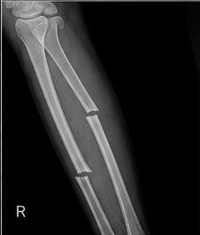
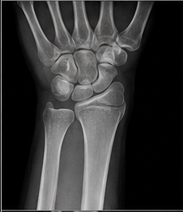
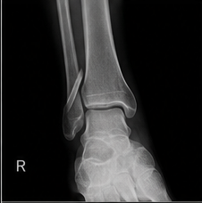
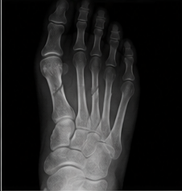
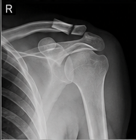
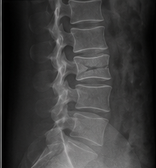

Foundations
ABCDE, observations, patient assessment, infection control, communication and documentation.
Serious FiveM roleplay reference • UK terminology • quick clinical notes
Use this page as the navigation point for the clinical knowledge areas, operational tools and RP references available in the desk.
Start with the patient-assessment and emergency references, then use the dedicated knowledge pages for deeper detail.
Information is presented for study, operational reference and/or FiveM RP according to the page badge.
UHS overview, updates and quick access
New and recently enhanced clinical desk content.
Quick access to all clinical tools, RP actions, and emergency pathways.
Primary assessment
Vitals and monitoring
ECG, arrest, ACS
Airway, breathing
Major trauma, burns
GCS, stroke, seizure
All emergency pathways
Step-by-step guides
Drug reference
Equipment library
Incident scenarios
Clinical notes
Action builder
Pain management
IV fluids
Transfusion
Your most recently used /me actions.
Add custom /me actions to see them here.
Your starred RP actions for quick access.
Star actions from your RP library to see them here.
One-click access to emergency protocols.
Upload a PDF or PPTX file.
Build clinical knowledge from foundations through emergency and advanced learning, with FiveM Serious RP practice attached to the skill.
ABCDE, observations, patient assessment, infection control, communication and documentation.
Cardiology, respiratory, neurological, trauma, fluids, blood and related clinical references.
Rapid-access learning for stroke, cardiac emergencies, trauma, burns, sepsis and other acute presentations.
Advanced assessment, specialist pathways, HEMS/HART material, surgeries and complex scenarios.
Browse clinical information by system and presentation. Detailed content remains in the existing clinical modules.
Core assessment modules are kept together so learners can build a consistent approach before moving into individual conditions.
Primary survey, reassessment, escalation, equipment and RP actions.
Vital signs, consciousness, glucose, pupils, pain and monitoring references.
Consciousness, pupils, glucose and stroke-screen material.
Pain assessment and the existing management reference.
Follow the sequence from recognition and assessment through escalation, transport and hospital care.
Practise clinical decision-making using the existing FiveM Serious RP scenario material.
Work through scene presentation, assessment, treatment, reassessment and handover.
Use Emergency Mode for rapid-access situation-specific reference during RP.
Review role-specific surgical workflows and detailed RP actions.
Use quick-reference material, RP actions, documentation templates and the knowledge search to revise and practise.
Search clinical desk content from anywhere in the platform.
Keep roleplay actions beside the clinical skills they support.
Review clinical documentation, SBAR, HART, HEMS and call-matrix references.
Jump to ABCDE, observations, stroke and emergency references.
Fast access to high-use clinical and FiveM RP reference material.
Rapid-access reference for emergency-focused information already contained in the Clinical Desk.
Use the page to move quickly between emergency resources and the relevant clinical knowledge sections.
Information is presented for study, operational reference and/or FiveM RP according to the page badge.
Rapid scene and emergency workflow
Fast-access emergency pathways — UK clinical practice for FiveM EMS roleplay. Select an emergency for immediate priorities, assessment steps, management, RP actions and handover.
Recognition → ABCDE → specialist pathway
Core observation reference covering the measurements and interpretation displays already provided in the desk.
Review observations alongside the wider assessment context rather than treating a single value in isolation.
Information is presented for study, operational reference and/or FiveM RP according to the page badge.
Clinical observations and recording reference
Move each slider to see the reading and its typical clinical meaning update live — including Blood Pressure. See the Pain page for the pain scale, management ladder and medication doses.
Blood pressure is recorded in mmHg as systolic/diastolic.
| Reading | RP meaning | What it may suggest |
|---|---|---|
| < 90/60 | Low BP / hypotension | May be significant if symptomatic: dizziness, weakness, confusion or fainting. |
| 90/60–120/80 | Common reference range | Often regarded as a healthy/ideal range, but context matters. |
| 120/80–139/89 | Raised / above ideal | Not automatically hypertension; repeat and consider the clinical context. |
| ≥ 140/90 in clinic | High BP | NICE uses this as the clinic threshold for further assessment/confirmation. |
| ≥ 180/120 | Severely raised | Needs urgent clinical assessment, particularly with concerning symptoms or signs of acute organ damage. |
The top number. The highest pressure when the heart contracts and pumps blood.
The bottom number. The pressure when the heart relaxes between beats.
beats per minute (bpm)
breaths per minute
percentage (%)
mmHg
°C
Eye / Verbal / Motor
mmol/L
0–10
Upload a PDF or PPTX file and it will be displayed here as a reference document.
Pain reference covering assessment, the pain scale, management ladder and medication-related information already provided on the page.
Use the page tabs/cards to move from assessment information into the documented management and RP material.
Information is presented for study, operational reference and/or FiveM RP according to the page badge.
Pain assessment and RP reference
Score it, manage it, and know the doses — three tabs covering the whole picture.
“On a scale of 0 to 10, where 0 is no pain and 10 is the worst pain you can imagine, what is your pain right now?”
“Where is the pain?” “When did it start?” “What does it feel like?” “Does it move anywhere?” “What makes it better or worse?”
Record the score before treatment and again afterwards. A useful RP note is: pain 8/10 → treatment → pain 4/10, together with the patient's clinical observations and response.
A 9/10 headache, 9/10 abdominal pain, 9/10 chest pain and 9/10 fracture pain are not automatically treated identically. Assess ABCDE and look for the underlying cause before reaching for the ladder below — the score guides intensity, not the diagnosis.
Splinting/immobilising an injury, positioning the patient comfortably, reassurance and calm communication, applying cold packs where appropriate, and simply reducing unnecessary movement all reduce pain — and cost nothing, carry no side effects, and work while you're preparing medication.
Use the score as a guide only. The injury, observations, age, weight, allergies, pregnancy, renal/hepatic function, bleeding risk and existing medicines can change the choice.
Paracetamol 500 mg–1 g PO per dose, at least 4 hours apart.
Maximum usual adult dose: 4 g in 24 hours. Consider a lower maximum in people under 50 kg or with relevant risk factors.
Ibuprofen 200–400 mg PO can be considered when an NSAID is appropriate; common OTC maximum 1.2 g/day.
Paracetamol 500 mg–1 g PO remains a base analgesic where appropriate.
For appropriate acute injuries/fractures, NICE recommends paracetamol + codeine for moderate pain. Co-codamol contains 500 mg paracetamol + 8, 15 or 30 mg codeine per tablet; adults can take 1–2 tablets up to 4 times/day, with 4–6 hours between doses and a maximum of 8 tablets/day.
Important: count the paracetamol in co-codamol toward the daily paracetamol maximum.
For major trauma, NICE recommends IV morphine as first-line, adjusted to effect by an appropriately trained clinician.
A historical NICE acute-trauma evidence dosing approach describes an initial up to 5 mg IV, then 1–5 mg IV increments at 5-minute intervals, titrated to effect. This is not a universal fixed dose and requires appropriate monitoring and clinical authority.
For suspected long-bone fracture, NICE recommends IV paracetamol supplemented with IV morphine titrated to effect for severe pain.
Do not simply keep increasing tablets because the score is 10. Find and treat the cause, repeat ABCDE/observations and escalate.
For major trauma, use the severe-pain pathway with appropriately titrated IV opioid analgesia and monitoring. Consider specialist/anaesthetic support where pain remains uncontrolled.
Reassess pain, respiratory rate, SpO₂, consciousness and BP after opioid treatment.
Record the score before treatment and again afterwards — pain 8/10 → treatment → pain 4/10 is a genuinely useful RP note. If a treatment isn't working, escalate rather than repeating the same thing.
Pain remains severe/uncontrolled despite appropriate treatment, there are signs of a serious underlying cause, or the patient needs analgesia beyond what's within your own scope — hand over to a senior clinician rather than pushing further alone.
| Medicine | Typical adult dose | Interval / maximum | Role in RP |
|---|---|---|---|
| Paracetamol | 500 mg–1 g PO | ≥4 hours; max 4 g/24h usual adult regimen | Mild pain; base analgesic for many acute injuries |
| Ibuprofen | 200–400 mg PO | ≥4 hours; OTC max 1.2 g/day | Inflammatory/musculoskeletal pain when NSAID appropriate |
| Co-codamol | 1–2 tablets of 8/500, 15/500 or 30/500 | 4–6 hours; max 8 tablets/24h | Moderate pain when appropriate; prescription strengths require clinician direction |
| IV morphine | Major-trauma titration: initial up to 5 mg, then 1–5 mg increments | 5-minute reassessment/titration in the cited acute-trauma approach | Severe major-trauma pain; monitored clinical setting |
Upload a PDF or PPTX file and it will be displayed here as a reference document.
Structured primary assessment and reassessment reference. The existing page is organised around Approach, Airway, Breathing, Circulation, Disability and Exposure.
Work through the existing tabs, equipment references, advanced RP actions, reassessment and handover sections.
Information is presented for study, operational reference and/or FiveM RP according to the page badge.
Primary survey and reassessment reference
Structured primary assessment. Identify and treat immediate life threats as they are found, then reassess.
Safety, PPE, mechanism, hazards, patient count and resources.
Appearance, responsiveness, catastrophic bleeding and obvious distress.
Assess systematically and treat life threats immediately.
Repeat the relevant assessment after every major intervention or deterioration.
Assess patency, obstruction, secretions and ability to maintain the airway. Consider spinal precautions where indicated.
Assess respiratory rate, effort, chest movement, oxygenation, breath sounds and obvious chest injury.
Assess major haemorrhage, pulse, perfusion, blood pressure and signs of shock. Control bleeding early.
Assess consciousness, pupils, glucose where indicated, seizures and acute neurological change.
Expose enough to identify hidden injuries while preventing heat loss and preserving dignity and privacy.
Suction, airway adjuncts, BVM, oxygen, airway PPE.
Pulse oximeter, stethoscope, oxygen devices, chest dressings/seals, ventilation equipment.
BP cuff, monitor, vascular access kit, dressings, tourniquet, haemorrhage-control equipment.
Glucose meter, pupil light, neurological assessment and observation equipment.
Trauma shears, blankets, warming equipment, burns dressings and PPE.
Stretcher, monitoring equipment, appropriate immobilisation equipment and documentation kit.
Every action has a standard /me command and an F8-ready me command. Click either button to copy it.
Structured head-to-toe assessment after immediate life threats have been addressed and the patient is stabilised.
Emergency-focused clinical knowledge grouped for quick access from the Clinical Desk.
Use the existing emergency cards and supporting references to identify the relevant knowledge area for the scenario.
Information is presented for study, operational reference and/or FiveM RP according to the page badge.
Emergency presentations and response reference
Check for no more than 10 seconds — unresponsive and not breathing normally means starting CPR immediately. Compress at 100–120/min, 5–6cm depth, minimal interruptions. Attach the AED/defibrillator as soon as available and follow its prompts. See the Cardiac page for the full arrest algorithm, drugs and RP library.
Apply firm direct pressure with a dressing first. If a limb bleed continues, apply a tourniquet high and tight and note the application time. Consider haemostatic packing for junctional or non-limb wounds. Reassess for shock — pulse, skin colour, capillary refill, BP — and escalate rapidly.
Use FAST — Face drooping, Arm weakness, Speech difficulty, Time symptoms started — to screen quickly. Check capillary glucose to rule out hypoglycaemia as a mimic. Establish the exact time last seen well, since it determines thrombolysis/thrombectomy eligibility, and pre-alert the stroke unit.
Look for sudden airway swelling, stridor, wheeze or persistent hypotension alongside a likely trigger. Give IM adrenaline into the anterolateral thigh without delay. Lie the patient flat with legs raised (or sitting if breathless), and repeat adrenaline after 5 minutes if there's no improvement.
Note the exact start time, move hazards away and cushion the head rather than restraining the patient. Most seizures self-terminate within 2–3 minutes. A seizure lasting beyond 5 minutes, or repeating without recovery in between, is status epilepticus and needs urgent escalation for benzodiazepine treatment.
Take a SOCRATES-style pain history, obtain a 12-lead ECG within 10 minutes where possible, and give oxygen only if hypoxic. See the Cardiac page for the full ACS assessment pathway, RP library and medication doses.
Suspect sepsis where there's a likely infection source plus a red flag — new confusion, systolic BP ≤90, HR >130, RR ≥25, non-blanching rash, or no urine output in 18 hours. Start the "Sepsis Six" within the hour where within scope: oxygen, cultures, IV antibiotics, IV fluids, lactate and urine output monitoring.
Upload a PDF or PPTX file and it will be displayed here as a reference document.
Trauma knowledge and practical RP reference, including the detailed trauma content already built into the desk.
Use the structured trauma sections together with the ABCDE primary survey and the dedicated RP actions.
Information is presented for study, operational reference and/or FiveM RP according to the page badge.
Trauma assessment and treatment reference
Repeat GCS matters more than a single reading — watch the trend, and keep spinal precautions in mind given the mechanism.
Any loss of consciousness, amnesia, vomiting, seizure activity, severe headache, GCS below 15, or a focal neurological deficit.
Battle's sign (bruising behind the ear), "panda eyes" (bruising around the eyes), CSF leak from the nose or ear, or haemotympanum.
GCS below 13 initially, GCS below 15 at 2 hours, suspected open/depressed skull fracture, signs of a basal skull fracture, a post-traumatic seizure, focal neurological deficit, more than one episode of vomiting, or being on anticoagulants with any head injury.
An open chest wound and a flail segment both need specific handling — don't just treat every chest injury the same way.
Pain worse on breathing, bruising or wounds to the chest wall, paradoxical (flail) chest wall movement, reduced or absent breath sounds on one side, tracheal deviation, or surgical emphysema (crackling under the skin).
Flail chest, simple or tension pneumothorax, haemothorax, open (sucking) chest wound, pulmonary contusion, and rib fractures.
Cover with a dressing sealed on three sides, allowing air to escape but not re-enter, and watch closely for an evolving tension pneumothorax.
A normal-looking abdomen early on doesn't rule out serious internal bleeding — reassess repeatedly.
Abdominal tenderness, guarding or distension, bruising (including a seatbelt mark), pelvic pain or instability, blood at the urethral meatus, or a leg length discrepancy.
Handle gently — avoid repeatedly "springing" or manipulating the pelvis, which can dislodge a forming clot and worsen bleeding. Apply a pelvic binder at the level of the greater trochanters if indicated.
Spleen or liver injury can cause substantial concealed blood loss while the abdomen still looks relatively normal early on.
Once spinal injury is suspected, minimise movement and keep the spine aligned until it's safe to clear.
Falls from height, diving injuries, RTCs, direct blows to the spine, or any significant axial-loading mechanism.
Spinal tenderness, deformity or a step on gentle palpation, and any neurological symptoms — weakness, numbness, tingling, or loss of bladder/bowel control.
Used to examine the back and move the patient onto a board/scoop while keeping the spine aligned — needs a coordinated team, with one person controlling the head and neck.
Often obvious on inspection, but the real priority is checking what's happening below the joint — never skip the neurovascular check.
The most commonly dislocated joint, usually anteriorly, from a fall onto an outstretched arm or a direct blow. The arm is typically held slightly away from the body and resists movement — check the "regimental badge" area on the outer shoulder for axillary nerve sensation.
Usually at an interphalangeal joint from a direct blow or hyperextension — a "jammed finger." Deformity is often obvious; check circulation and sensation before and after any reduction attempt.
Usually posterior, from a fall onto an outstretched hand. Document the radial pulse and hand sensation before and after, given the risk to the brachial artery and nerves running close by.
Most commonly posterior — classically a "dashboard injury" in a road traffic collision. The leg is typically shortened, flexed and internally rotated. Time-critical, given the risk to the blood supply of the femoral head.
Usually dislocates laterally, often during a sporting twisting injury, with the kneecap visibly displaced to the outer side of the knee.
Often accompanies a fracture (fracture-dislocation). Look for gross deformity and check circulation urgently, since the skin can be at risk from pressure over a displaced bone.
Can follow a wide yawn, a direct blow, or dental treatment. The patient is often unable to close their mouth and may have difficulty speaking.
Dislocations are often obvious on inspection, but always check and document distal circulation, sensation and movement before and after any reduction attempt. Reduction should only be attempted by someone trained and appropriately supervised, within their scope — support and splint rather than attempt reduction otherwise.
Use the two tabs to copy the exact command format you need.
A complete visual study reference — patterns, recognition, assessment, management, red flags and healing — plus a structured checklist and /me + F8 RP library.
The fracture line runs approximately straight across the bone. Usually caused by a direct blow or a force applied at a right angle to the bone.
A crack running parallel to the bone's long axis rather than across it. Often from a direct impact, and can be easy to miss on a quick look.
The fracture line crosses the bone at an angle, with fragments remaining in reasonable alignment.
The same angled break pattern, but the fragments have shifted out of alignment — often visibly deformed, and usually needing reduction.
A twisting force creates a fracture line that winds around the bone. Common in sporting injuries, and a pattern worth being alert to when the mechanism described doesn't fit, particularly in children.
An incomplete fracture in which one side bends while the other side breaks. Seen almost exclusively in children, whose bones are more flexible than an adult's.
The bone is divided into three or more major fragments, usually from high-energy trauma such as a fall from height or a road traffic collision.
Two separate fracture lines create an isolated segment of bone trapped between them.
The bone cortex buckles or compresses without a complete break. Commonly seen in children.
One fracture fragment is driven into another, often compacting and shortening the bone slightly.
The bone is crushed or compressed, often producing a shortened or collapsed appearance — typically seen in the spine.
A small piece of bone is pulled away by a tendon or ligament, usually at the point where it attaches.
A non-displaced fracture remains substantially aligned, whereas a displaced fracture has fragments that have moved. Clinicians describe this using translation, angulation, shortening and rotation — alignment matters because it affects stability, healing, and nerve or vessel function.
A closed fracture doesn't communicate with the outside through a wound. An open fracture has a wound communicating with the fracture site — bone may or may not be visible — and is urgent because of contamination and infection risk. Never push exposed bone back in or attempt to straighten the limb; control bleeding without pressing on exposed bone, cover the wound, and keep the limb as still as possible.
Pain (especially with movement/loading), swelling or bruising, deformity or an abnormal angle, reduced or abnormal movement, loss of normal function, shortening or rotation, an associated wound or bleeding, numbness or tingling, and abnormal colour or temperature beyond the injury. The appearance of an injury can't reliably confirm or exclude a fracture — a person may still be able to move an injured limb despite one. Don't deliberately test for crepitus or instability.
Pulse — assess distal pulse, compare with the unaffected side. Colour — check for pallor, blue/grey colour or other changes. Capillary refill — assess distal perfusion where appropriate. Movement — gentle movement only when safe, never force a painful/deformed injury. Sensation — check for numbness, tingling or altered sensation distal to the injury. Record findings before and after immobilisation, and report any deterioration promptly.
Support the injured limb rather than repeatedly manipulating it. Support the joints above and below the suspected fracture where practical, and use padding to protect pressure points. Don't force a deformed limb straight or push exposed bone beneath the skin. Remove rings, watches and other constrictive items early, since swelling can increase. Recheck circulation and sensation after applying support or a splint.
Diagnosis combines history, mechanism, examination and imaging when indicated. AP (anteroposterior) — the X-ray beam passes front to back. Lateral — a side projection. Oblique — an angled projection used when extra detail is needed. CT/MRI may be used for selected injuries.
A cast is only appropriate for limb fractures that are stable and non-displaced (or reduced first) — not for ribs, spine, skull or most shoulder injuries. Apply padding before the casting material, hold the joint in the correct functional position while it sets, and never wrap it too tight. Check it fits two fingers comfortably at the top, elevate the limb afterwards, and give clear cast-care advice (keep dry, don't insert objects, seek help urgently for worsening pain, numbness or colour change).
Open fracture or visible bone, severe/uncontrolled bleeding, major deformity or suspected severe displacement, absent or markedly reduced distal circulation, new significant numbness/weakness, signs of shock, suspected spinal/pelvic/major long-bone injury, severe head injury or altered consciousness, breathing difficulty, or possible compartment syndrome.
Compartment syndrome, nerve injury, vascular injury, infection (especially open fractures), fat embolism syndrome (rare, associated with major long-bone trauma), delayed union/non-union, malunion, stiffness/reduced function, and post-traumatic arthritis in joint-surface injuries.
Often follows a fall or impact to the shoulder. Pain, swelling and deformity may occur.
Upper-arm fractures can affect nearby nerves and vessels, so distal neurovascular checks are important.
Often occurs after a fall onto an outstretched hand; swelling and deformity may be present.
Particularly important in older adults after low-energy falls — inability to bear weight and a shortened/externally-rotated leg can occur.
A major long-bone injury that can be associated with substantial blood loss.
Twisting injuries can fracture one or both malleoli, causing significant swelling and pain.
Pain is often worse with breathing or coughing; assess for associated chest injury.
Inflammatory: a haematoma forms, inflammatory signalling begins. Repair/soft callus: fibrous and cartilaginous tissue bridges the fracture. Hard callus/consolidation: new bone progressively strengthens the site. Remodelling: bone is reshaped over time. Healing time varies with the bone, pattern, blood supply, age, smoking, nutrition and treatment.
Wrist: fall from a bike, swollen deformed wrist — assess circulation/sensation, immobilise, arrange imaging. Hip: older adult, severe pain, can't weight-bear — minimise movement, urgent assessment. Open tibia: high-energy injury, deformed leg, open wound — bleeding control, wound protection, never push bone back in. Compartment syndrome: worsening pain and tight swelling after a lower-leg fracture — urgent emergency assessment.
Real X-ray examples matched to the fracture patterns covered in this guide.

Lower leg (tibia/fibula) — the fracture line runs straight across both bones.

Wrist / distal radius — the classic fracture from a fall onto an outstretched hand.

Ankle — an angled fracture line through the distal fibula.

Foot — a helical fracture line from a twisting force.

Shoulder / proximal humerus — the bone is broken into multiple fragments.

Spine (lumbar) — a vertebral body has collapsed/wedged under compressive force.
Additional regions, shown as schematic illustrations rather than real X-ray photographs.
5th metacarpal neck — the classic closed-fist punching injury, with visible angulation.
A break within the shaft of a finger bone, distinct from the normal joint spaces above and below it.
Both-bone (radius/ulna) forearm fracture — common from a direct blow or fall.
Pain worse on breathing/coughing — assess for associated chest injury.
5th metatarsal (Jones-type) — common from an inversion/twisting injury.
A crack through the skull vault without displacement — needs urgent head-injury assessment.
Use the two tabs to copy the exact command format you need.
Upload a PDF or PPTX file and it will be displayed here as a reference document.
Respiratory assessment and reference information presented within the Clinical Desk.
Use the existing respiratory information with observations and ABCDE breathing assessment when moving through a scenario.
Information is presented for study, operational reference and/or FiveM RP according to the page badge.
Respiratory assessment and management reference
Work of breathing, respiratory rate, cyanosis, posture, accessory muscle use and ability to speak.
Wheeze, stridor, reduced air entry and other abnormal breath sounds.
SpO₂, RR, HR, BP and temperature; consider peak flow or other tests where appropriate.
Document response to treatment and repeat observations rather than relying on one reading.
Work up the airway ladder — always use the simplest device that does the job, escalating only when it isn't enough.
Positioning & basic manoeuvres → basic adjuncts (OPA/NPA) → supraglottic device (i-gel/LMA) → definitive airway (ETT) → surgical airway. Move up only as far as needed, and always be ready to step back down if a simpler option becomes adequate again.
Head-tilt, chin-lift — first-line for a medical patient with no trauma concern. Jaw thrust — used instead where cervical spine injury is suspected, since it avoids neck extension; push the angles of the jaw forward with both hands while a colleague stabilises the neck.
Holds the tongue off the posterior pharyngeal wall. Only tolerated by a deeply unconscious patient with no gag reflex — if they gag, it's the wrong choice.
Better tolerated than an OPA in a patient with some gag reflex remaining.
Sits above the vocal cords — a better seal than basic adjuncts, without needing laryngoscopy. A step up from basic airways, a step below full intubation.
The definitive airway — protects against aspiration and allows full ventilatory control.
Last resort for a "can't intubate, can't oxygenate" emergency, when no other airway can be secured.
Use the two tabs to copy the exact command format you need.
Upload a PDF or PPTX file and it will be displayed here as a reference document.
Cardiac assessment and treatment reference contained in the Clinical Desk.
Use the existing cardiac information together with observations, monitoring and the medication reference where relevant.
Information is presented for study, operational reference and/or FiveM RP according to the page badge.
Cardiac assessment and emergency reference
A structured UK ambulance-style approach to suspected cardiac chest pain and cardiac arrest, for RP realism. This is not real clinical guidance — follow your actual training and your service's own protocols.
SOCRATES-based chest pain history, early 12-lead ECG, oxygen only if hypoxic, aspirin where indicated, and early escalation of red flags.
Central/retrosternal chest pain or discomfort, often heavy, tight or crushing, which may radiate to the arm, jaw, neck or back. May come with sweating, nausea, breathlessness or a sense of impending doom. Older patients, women and people with diabetes can present atypically with little or no pain.
Current UK guidance does not support routine high-flow oxygen in a normoxic patient — only give supplemental oxygen if SpO₂ is below the target range (commonly under 94%, lower in known COPD). Attach continuous cardiac monitoring and repeat observations regularly.
Obtain and review a 12-lead ECG as early as possible, ideally within 10 minutes of first contact. Look for ST-segment elevation or depression, T-wave inversion and any new left bundle branch block. Compare against a previous ECG where one is available.
Ongoing pain despite treatment, a dynamic or abnormal ECG, haemodynamic instability or a new arrhythmia are red flags. Escalate to a senior clinician/cardiology promptly and pre-alert the receiving unit.
Inferior changes (II, III, aVF) suggest the right coronary artery; anterior changes (V1–V4) suggest the LAD; lateral changes (I, aVL, V5–V6) suggest the circumflex. Reciprocal ST depression in the opposite leads supports a genuine STEMI over a mimic.
Tools like the HEART score (ED chest pain risk) and GRACE score (in-hospital/6-month risk in confirmed ACS) exist locally to help guide admission, early discharge or invasive management decisions alongside clinical judgement.
Early recognition, high-quality CPR, early defibrillation and treating reversible causes give the patient the best chance of a good outcome.
Unresponsive and not breathing normally, or only making agonal/gasping breaths. Check for no more than 10 seconds — don't delay starting compressions to keep re-checking.
Centre of the chest, rate 100–120 per minute, depth 5–6cm, allowing full chest recoil between compressions. Minimise interruptions and swap the compressor role roughly every 2 minutes to maintain quality.
Attach the AED/defibrillator as soon as it's available and follow its prompts. Stand clear during rhythm analysis and shock delivery, then resume compressions immediately afterwards.
Consider the 4 Hs — Hypoxia, Hypovolaemia, Hypo/hyperkalaemia & metabolic causes, Hypothermia — and the 4 Ts — Thrombosis, Tamponade, Toxins, Tension pneumothorax.
Target SpO₂ 94–98% (avoid hyperoxia) and normal CO₂ levels. Consider temperature management per local protocol, obtain a 12-lead ECG, and arrange urgent cardiology referral if a STEMI cause is likely.
A clear team leader, closed-loop communication, and rotating compressors every 2 minutes keep quality high. Rhythm and pulse checks happen at each 2-minute cycle, in the pause immediately before or after a shock.
Each category has its own actions. Use the two tabs to copy the exact command format you need.
Upload a PDF or PPTX file and it will be displayed here as a reference document.
Neurological reference covering consciousness, pupils, glucose and stroke-screen information already provided on the page.
Move from rapid neurological assessment into the more detailed reference material available in this section.
Information is presented for study, operational reference and/or FiveM RP according to the page badge.
Neurological assessment reference
Use AVPU for a rapid assessment and GCS when a more detailed assessment is required.
Record size, equality and reaction to light.
Check blood glucose when altered consciousness or other clinical indications make it relevant.
Assess facial movement, arm strength and speech/language changes, noting exact onset/last-known-well time.
Upload a PDF or PPTX file and it will be displayed here as a reference document.
Recognition, assessment, escalation, specialist pathways and FiveM Serious RP simulation.
Use this as a structured simulation reference. Confirm current local policy, scope of practice and specialist direction before any real-world intervention.
Sudden facial weakness, arm weakness or speech disturbance are core FAST findings. Other sudden visual, balance, sensory or cognitive symptoms can also occur.
Record exact symptom onset when known and the last-known-well time when onset is uncertain or unwitnessed.
ABCDE, glucose, FAST/BE-FAST, consciousness, pupils, focal neurology, observations and relevant medication history.
Use the configured pre-alert and destination pathway. Suspected LVO, deterioration, reduced consciousness and haemorrhage features require rapid senior/specialist escalation.
Brain injury caused by interruption of cerebral blood flow, commonly from thrombosis or embolism. Consider large-vessel occlusion (LVO) when there are severe focal deficits and follow the configured specialist pathway.
Bleeding within brain tissue. Sudden neurological deficit may occur with severe headache, vomiting, reduced consciousness, seizure or marked hypertension. Treat deterioration as an emergency and escalate.
Bleeding into the subarachnoid space. A thunderclap or sudden severe headache, collapse, vomiting, meningism, seizure or reduced consciousness are important red flags.
Transient neurological symptoms can resolve, but this does not make the event benign. NICE recommends immediate specialist assessment for suspected TIA and advises against using ABCD2 to determine urgency.
Consider hypoglycaemia, seizure/post-ictal weakness, migraine, Bell's palsy, intoxication, sepsis, syncope and functional neurological symptoms. A mimic should be investigated rather than assumed.
Rapid neurological deterioration, falling GCS, severe headache at onset, seizure, anticoagulant use, vomiting, new pupillary abnormality, airway compromise or other critical ABCDE abnormality.
Ask for a smile; look for asymmetry or facial weakness.
Ask the patient to raise both arms; compare strength and drift.
Listen for slurring, word-finding difficulty or abnormal language.
Record onset or last-known-well and activate the appropriate emergency pathway.
| Scenario | HR | BP | RR | SpO₂ | Temp | Glucose | GCS |
|---|---|---|---|---|---|---|---|
| Mild suspected ischaemic stroke | 88 | 178/96 | 18 | 96% | 36.7°C | 6.2 mmol/L | 14/15 |
| Severe suspected LVO | 92 | 184/102 | 20 | 95% | 36.6°C | 6.8 mmol/L | 12/15 |
| Suspected ICH | 96 | 202/112 | 22 | 94% | 36.8°C | 7.1 mmol/L | 10/15 |
| Suspected SAH | 104 | 188/104 | 21 | 97% | 36.9°C | 5.9 mmol/L | 13/15 |
| TIA after symptom resolution | 76 | 156/88 | 16 | 98% | 36.5°C | 5.6 mmol/L | 15/15 |
| Hypoglycaemia mimic | 82 | 142/82 | 18 | 97% | 36.4°C | 2.8 mmol/L | 13/15 |
These are fictional RP examples, not diagnostic thresholds or treatment targets. Interpret observations in context and follow current local guidance.
“When was the patient last seen completely normal?” Establish the source of the information and whether the time is exact or estimated.
For symptoms first noticed on waking, record the last time the patient was known to be normal before sleep and the discovery time separately.
Record symptom onset, last-known-well, discovery time, progression and witness account. Do not substitute discovery time for last-known-well when they differ.
Record AVPU for rapid assessment and GCS when a more detailed score is required. Document the trend rather than a single isolated number.
Record size, equality and reaction to light. New asymmetry or deterioration should trigger urgent escalation.
Compare face, arm and leg movement. Note drift, power asymmetry and progression.
Distinguish slurred speech from difficulty producing or understanding language where possible. Record the patient's baseline language.
Ask about sudden visual loss and look for gaze deviation or inattention/neglect when appropriate.
Record new ataxia, sensory loss or coordination changes where the patient can safely participate.
NICE recommends immediate non-enhanced CT in specified higher-risk situations including potential thrombolysis/thrombectomy, anticoagulant use, bleeding tendency, depressed consciousness, progressive/fluctuating symptoms, papilloedema/neck stiffness/fever or severe headache at onset. CTA follows initial CT when thrombectomy may be indicated.
NICE currently lists alteplase and tenecteplase as options for eligible acute ischaemic stroke within 4.5 hours after symptom onset/last-known-well as applicable, after intracranial haemorrhage has been excluded. Treatment must occur in an appropriately organised stroke service with trained staff and imaging access.
NICE recommends rapid consideration for eligible proximal anterior circulation occlusion within 6 hours and selected patients up to 24 hours, including wake-up stroke, when appropriate imaging demonstrates potentially salvageable tissue. Posterior circulation pathways are also covered by current NICE recommendations.
Once haemorrhage is identified, follow the specialist haemorrhagic stroke pathway, including anticoagulant review/reversal where indicated, blood-pressure management according to the current pathway, neurosurgical discussion where appropriate and specialist monitoring.
NICE recommends immediate specialist assessment for suspected TIA, with review within 24 hours of symptom onset. Do not use ABCD2 to determine urgency of referral.
Acute stroke patients should have swallowing screened by an appropriately trained healthcare professional before oral food, fluid or medication is given.
NICE: suspected TIA — 300 mg daily unless contraindicated, started immediately. For acute ischaemic stroke, NICE recommends 300 mg as soon as possible and within 24 hours after intracerebral haemorrhage has been excluded, with route dependent on swallowing.
Current UK SmPC: acute ischaemic stroke treatment started as early as possible and no later than 4.5 hours after last-known-well, after appropriate imaging excludes intracranial haemorrhage.
Current UK SmPC: acute ischaemic stroke within 4.5 hours from last-known-well after intracranial haemorrhage has been excluded. Prescribed by physicians experienced in neurovascular care and thrombolysis, with monitoring facilities.
Check glucose in sudden neurological symptoms. Treatment must follow the current local hypoglycaemia protocol and patient-specific circumstances; do not assume a stroke is the cause before reversible mimics are addressed.
RP sequence only: follow the configured clinical authority, current protocol, product information and local medication-safety procedure. Do not infer a dose from the RP text.
The dose and concentration must come from the configured medication record/current protocol. This library deliberately does not supply a fictional dose.
Sudden unilateral weakness and dysarthria. Branch on glucose, last-known-well, anticoagulant history and neurological trend.
Severe focal deficit with gaze deviation/neglect. Branch on pre-alert, specialist destination and HEMS escalation.
Severe headache, vomiting and neurological deterioration. Branch on anticoagulant history and specialist escalation.
Thunderclap headache with collapse/vomiting. Branch on consciousness, seizure and urgent imaging pathway.
Deficits have resolved before arrival. Branch on accurate timeline and urgent specialist pathway.
Stroke-like weakness with low glucose. Branch on treatment response and reassessment rather than assuming stroke.
Transient focal weakness after a witnessed seizure. Branch on recovery, glucose and ongoing neurological deficit.
Symptoms found on waking. Record last-known-well before sleep separately from discovery time.
Falling GCS and worsening airway/breathing. Prioritise ABCDE, escalation and reassessment.
> Roleplay disclaimer: The doses below are real adult clinical doses for reference, not instructions for real-world administration. In your FiveM server, they should only be used by the ranks authorised in your SOP. Real treatment depends on weight, renal function, timing, contraindications, monitoring and local policy.
NICE recommends urgent stroke assessment, glucose testing, CT/CTA, specialist stroke care and specialist-only thrombolysis. [1]  
Every suspected stroke patient should have:
| Observation | Why it matters | | ----------------------- | --------------------------------------------------------------- | | GCS/AVPU | Detects deterioration and airway risk | | Pupils | May suggest raised intracranial pressure or herniation | | Blood pressure | Important for thrombolysis and haemorrhage | | Heart rate/rhythm | Atrial fibrillation may indicate an embolic stroke | | Respiratory rate | Detects aspiration, fatigue or raised intracranial pressure | | SpO₂ | Determines whether oxygen is required | | Temperature | Fever worsens neurological injury | | Capillary blood glucose | Hypoglycaemia is a major stroke mimic | | FAST/NIHSS | Measures neurological deficit | | Limb strength | Detects progression or improvement | | Speech/language | Detects aphasia or dysarthria | | Facial symmetry | Detects cranial-nerve involvement | | Swallowing | Determines aspiration risk | | Headache/vomiting | More concerning for haemorrhage or raised intracranial pressure | | Seizure activity | May be a presentation or complication | | Anticoagulant history | Changes imaging, thrombolysis and reversal decisions |
NICE recommends oxygen only where oxygen saturation is low, and recommends swallowing assessment before oral food, fluids or medication. [1]  
> BP 182/100, HR 112 irregular, GCS 14, glucose 6.4 mmol/L, right facial droop, left arm power 2/5, expressive aphasia, left visual neglect, NIHSS 15.
These may indicate haemorrhagic transformation, cerebral oedema or another complication.
This is a severe ischaemic stroke involving a major cerebral artery.
> Patient has sudden right-sided paralysis, left gaze deviation, global aphasia, NIHSS 22 and GCS 12. CTA later shows proximal MCA occlusion.
NICE supports thrombectomy as soon as possible and, in selected patients, up to 24 hours after last-known-well when imaging demonstrates salvageable brain tissue. [1]  
> BP 226/118, HR 54, GCS 10 falling to 8, unequal pupils, vomiting, right-sided weakness and severe headache.
NICE recommends considering rapid BP reduction in suitable intracerebral haemorrhage patients, aiming for approximately 140 mmHg systolic while avoiding an excessive fall. [1]  
> Patient suddenly collapses with severe headache, vomiting, neck stiffness, BP 210/108 and GCS 13. No obvious facial droop, but they are confused and photophobic.
At assessment, the patient may appear almost normal.
NICE recommends aspirin 300 mg immediately for suspected TIA unless contraindicated and specialist assessment within 24 hours. [1]  
FAST may be negative.
> Patient has sudden vertigo, vomiting, double vision, inability to walk and slurred speech. Face and arms appear symmetrical. Glucose is normal.
NICE recommends full-dose anticoagulation for cerebral venous sinus thrombosis unless contraindicated. [1]  
Oxygen is not prescribed by a fixed “dose” in the same way as a tablet. It is titrated to oxygen saturation and clinical condition.
Suggested roleplay settings:
| Situation | Delivery | | ---------------------------------- | ------------------------------------ | | Mild hypoxia | Nasal cannula 2–4 L/min | | Moderate hypoxia | Simple face mask 5–10 L/min | | Severe hypoxia or airway emergency | Non-rebreather mask 10–15 L/min | | Ventilated patient | Bag-valve-mask with high-flow oxygen |
Give oxygen for hypoxia, not routinely to a patient with normal saturation. [1]  
/me opens the oxygen cylinder and checks the pressure gauge
/me connects the oxygen tubing to a non-rebreather mask
/me sets the oxygen flow to 15 litres per minute
/me applies the mask and reassesses the patient's oxygen saturation
/me checks the patient's glucose and identifies symptomatic hypoglycaemia
/me confirms the patient is alert and has a safe swallow
/me opens a glucose gel packet and administers it orally
/me repeats the blood glucose reading after treatment
A commonly used adult hospital regimen is:
The exact ambulance concentration and volume should be set by your server’s medicines policy.
/me confirms the patient cannot safely swallow
/me opens the IV glucose packaging and checks the solution
/me connects the glucose infusion to the patent cannula
/me administers IV glucose while monitoring the patient's airway and cardiac rhythm
/me repeats the capillary blood glucose after treatment
NICE recommends 300 mg daily initially, usually until definitive long-term antithrombotic treatment is started. [1]  
Do not administer if:
/me checks the CT report and confirms there is no intracranial haemorrhage
/me checks the patient's allergy and bleeding history
/me opens the aspirin packaging and prepares a 300 mg dose
/me administers the aspirin by the approved route
/me documents the dose, route and administration time
Example for a 70 kg patient:
Alteplase should only be given in an organised stroke service with appropriate imaging, monitoring and trained staff. [1] The MHRA product information is available here. [2]  
/me confirms the stroke consultant has approved alteplase
/me checks the patient's recorded weight and calculates 0.9 mg per kilogram
/me checks that the total dose does not exceed 90 mg
/me opens the alteplase packaging using aseptic technique
/me reconstitutes the medication according to the product instructions
/me performs a two-person check of the patient, dose, route and expiry date
/me administers 10 percent of the dose as an IV bolus
/me connects the remaining dose to an infusion pump for 60 minutes
/me records the door-to-needle time and starts post-thrombolysis observations
This should be administered only under the stroke-team pathway. The current UK stroke guideline supports 0.25 mg/kg rather than the higher 0.4 mg/kg regimen. [3] Product information is available from the MHRA. [4]  
/me confirms the consultant has chosen tenecteplase rather than alteplase
/me checks the patient's weight and calculates 0.25 mg per kilogram
/me confirms that the dose does not exceed 25 mg
/me opens and reconstitutes the tenecteplase vial according to the product instructions
/me performs an independent medication check
/me administers the tenecteplase as a slow IV bolus
/me records the exact administration time and begins neurological monitoring
Do not give alteplase and tenecteplase together.
Target:
After thrombolysis:
A commonly used adult IV regimen:
A commonly used adult IV regimen:
These are hospital-only medications for the roleplay pathway.
/me confirms the prescribed blood-pressure target with the senior doctor
/me checks the patient's pulse, blood pressure and contraindications
/me opens the nicardipine ampoule and prepares the infusion pump
/me connects the infusion to the patient's IV line
/me starts the infusion at the prescribed rate
/me repeats the blood pressure at regular intervals and titrates only on medical instruction
Do not rapidly lower BP in an ordinary ischaemic stroke that is not undergoing thrombolysis and has no hypertensive emergency.
For a suitable patient:
NICE states that BP treatment should be individualised, particularly where the patient has a very low GCS, a large haematoma, structural cause or planned early surgery. [1]  
/me confirms the CT shows intracerebral haemorrhage
/me connects the patient to continuous blood-pressure monitoring
/me prepares the prescribed nicardipine infusion
/me starts the infusion through an infusion pump
/me reassesses the blood pressure and neurological status at regular intervals
/me informs the consultant if the patient becomes hypotensive or neurologically worse
For serious intracranial bleeding:
NICE recommends PCC plus IV vitamin K for warfarin-associated intracerebral haemorrhage. [1]  
/me confirms the patient is taking warfarin and requests an urgent INR
/me informs the consultant and pharmacist of the intracranial haemorrhage
/me calculates the PCC dose from the patient's weight and INR
/me checks the PCC vial, expiry date and prescribed dose
/me prepares the PCC and IV vitamin K
/me administers the prescribed reversal treatment
/me arranges repeat INR testing and continued neurological observations
This is consultant/haematology-led treatment.
/me confirms recent dabigatran exposure and informs the consultant
/me opens the idarucizumab packs and checks both 2.5 gram doses
/me administers the first IV dose according to hospital policy
/me administers the second dose and documents the total 5 gram dose
/me monitors for ongoing bleeding, thrombosis and neurological deterioration
UK guidance identifies idarucizumab as the specific reversal agent for dabigatran. [5]  
Andexanet alfa licensed regimens:
Use depends on the drug, dose and time since the last dose. NICE notes that andexanet is not routinely recommended for intracranial haemorrhage outside specific specialist/research arrangements, so your server should make this a consultant/haematology decision. [6]  
/me confirms the patient has taken apixaban or rivaroxaban
/me checks the time and amount of the last dose
/me discusses the reversal option with the consultant and haematologist
/me prepares the prescribed andexanet alfa regimen
/me administers the bolus using the prescribed rate
/me starts the two-hour infusion through an infusion pump
/me monitors for recurrent bleeding, thrombosis and neurological deterioration
There is no specific licensed reversal agent for edoxaban; specialist advice is required. [5]  
For headache or fever:
/me confirms the patient's allergy, weight and recent paracetamol intake
/me opens the prescribed paracetamol packaging
/me administers 1 gram by the approved route
/me reassesses the patient's pain and temperature
Avoid masking neurological deterioration with excessive sedation or unnecessary medication.
For significant nausea or vomiting:
/me checks the patient's ECG and medication history for QT-prolonging drugs
/me opens the ondansetron ampoule and checks the dose
/me administers 4 mg slowly through the IV line
/me reassesses the patient's nausea, vomiting and neurological status
In suspected intracranial haemorrhage, vomiting should trigger continued neurological reassessment, not simply repeated antiemetic treatment.
Nimodipine is used in aneurysmal subarachnoid haemorrhage to reduce delayed cerebral ischaemia risk.
A common regimen is:
If oral/enteral treatment is impossible, specialist IV regimens may be used in a critical-care environment.
/me confirms the neurovascular consultant has diagnosed aneurysmal subarachnoid haemorrhage
/me checks the patient's blood pressure before administering nimodipine
/me administers 60 mg via the approved oral or enteral route
/me monitors the patient's blood pressure and neurological status
Do not give nimodipine as an informal ED medication for every headache or suspected stroke.
For established ischaemic stroke secondary prevention:
Immediate initiation is not normally the priority during hyperacute reperfusion decision-making. NICE advises continuing existing statin therapy and starting appropriate secondary prevention when safe. [1]  
/me confirms the swallowing assessment has been completed
/me reviews the lipid history and current statin prescription
/me administers the prescribed atorvastatin dose
/me documents the medication in the discharge and secondary-prevention plan
/me actions/me performs a repeat FAST and confirms a mild persistent facial droop
/me reviews the CT and confirms there is no intracranial haemorrhage
/me administers 300 mg of aspirin after confirming no contraindication
/me requests a swallowing assessment before any further oral medication
/me refers the patient to the acute stroke unit
/me confirms the last-known-well time and current NIHSS
/me confirms the CT excludes intracranial haemorrhage
/me checks the patient's blood pressure and medication history
/me calculates the weight-based thrombolytic dose
/me obtains consultant authorisation
/me performs a two-person medication check
/me administers the bolus and starts the infusion or documents the tenecteplase bolus
/me begins frequent blood-pressure and neurological observations
/me actions/me reviews the CTA and identifies a proximal middle cerebral artery occlusion
/me informs the stroke consultant and neurointerventionalist
/me confirms the patient's baseline independence and last-known-well
/me prepares the patient for immediate transfer to the thrombectomy suite
/me ensures the patient remains nil by mouth and continuously monitored
The UK stroke guideline describes selected late-window thrombolysis using MRI or perfusion mismatch and thrombectomy up to 24 hours in selected patients. [3]  
/me reassesses the airway after the patient's GCS falls
/me places the patient on continuous ECG, oxygen-saturation and blood-pressure monitoring
/me confirms the CT shows intracerebral haemorrhage
/me withholds aspirin and thrombolysis
/me prepares the prescribed nicardipine infusion
/me checks the medication history for warfarin or DOAC use
/me contacts neurosurgery and critical care
/me prepares anticoagulant reversal if indicated
/me actions/me confirms the patient's warfarin history and reviews the INR result
/me informs the consultant and pharmacist of the elevated INR
/me calculates the PCC dose using the patient's weight and INR
/me prepares PCC and 5 mg IV vitamin K
/me administers the prescribed reversal treatment
/me arranges repeat coagulation testing
/me actions/me confirms the patient took dabigatran three hours earlier
/me informs the stroke consultant and haematologist
/me prepares two 2.5 gram idarucizumab doses
/me administers the first dose followed by the second dose
/me monitors for ongoing bleeding and thrombotic complications
/me confirms that the patient's neurological symptoms have completely resolved
/me documents the exact time the weakness and speech disturbance began
/me confirms the duration of the episode with the witness
/me checks for aspirin allergy and active bleeding
/me administers 300 mg aspirin according to the TIA pathway
/me refers the patient for urgent specialist neurovascular assessment
/me performs a focused posterior-circulation neurological examination
/me checks eye movements, coordination, gait and speech
/me confirms the patient cannot walk safely
/me records that FAST is negative but posterior stroke remains suspected
/me requests urgent CT angiography and stroke-team review
Observe for:
/me performs a repeat neurological assessment and compares it with the pre-thrombolysis NIHSS
/me checks the patient's blood pressure and infusion site
/me asks about new headache, nausea or visual disturbance
/me informs the stroke consultant of the change in condition
Observe for:
Observe for:
Observe for:
Observe for:
Any recurrence of focal symptoms should convert the scenario back to an acute-stroke pathway.
Use this distinction:
Recognise, stabilise, document, pre-alert and transport.
Assess, image, exclude haemorrhage and activate the correct pathway.
Authorise thrombolysis, thrombectomy referral, specialist BP treatment and reversal.
Perform thrombectomy, aneurysm treatment, decompressive procedures and selected haemorrhage interventions.
This prevents paramedics from diagnosing the stroke subtype or administering high-risk medication before imaging.
Stroke and transient ischaemic attack in over 16s: ...  
www.nice.org.uk › ... › chapter › recommendations
mhra.gov.uk > ... > Summary of product characteristics > spc-doc_PL 14598-0183.pdf
Active substances: WATER FOR INJECTIONS, ALTEPLASE, last read 2026-09-27
National Clinical Guideline for Stroke for the United Kingdom and Ireland, 2023 edition  
National Clinical Guideline for Stroke for the UK and Ireland (04 Apr 2023)
  Reference guideline  
METALYSE 5 000 UNITS (25 MG) POWDER FOR SOLUTION FOR INJECTION  
mhra.gov.uk > ... > Summary of product characteristics > spc-doc_PLGB 14598-0240.pdf
Active substances: TENECTEPLASE, last read 2026-09-27
Direct-acting oral anticoagulants (DOACs): reminder of bleeding risk ...  
www.gov.uk › drug-safety-update
[PDF] Andexanet alfa for reversing anticoagulation - NICE  
www.nice.org.uk › ... › ta697 › documents › 1-3
/me Actions and MDT Templates> Roleplay use only: This is a fictional FiveM medical SOP based broadly on UK/NHS stroke pathways. It is not a real-world clinical protocol. Real treatment requires qualified clinicians, approved medicines, monitoring and local ambulance/hospital guidelines.
NICE recommends rapid FAST assessment, early glucose testing, minimal scene delay, hospital pre-alert, urgent CT/CTA and specialist stroke-unit care. Aspirin is given after intracranial haemorrhage has been excluded, while thrombolysis is restricted to an organised stroke service. [1]
A clot blocks blood flow to part of the brain.
A blood vessel ruptures inside the brain.
Bleeding occurs around the brain, often from a ruptured aneurysm.
A temporary neurological deficit caused by reduced cerebral blood flow, with symptoms resolving completely.
A TIA still requires urgent specialist review. NICE recommends specialist assessment within 24 hours and advises against using ABCD2 alone to determine urgency. [1]
May:
May not independently:
May:
May not independently:
May additionally:
May additionally:
Consultant Paramedics should not independently administer thrombolysis unless they are specifically credentialed to work within an authorised mobile stroke unit.
HART personnel retain their normal clinical permissions but may additionally:
HART status alone does not give authority to administer thrombolysis or hospital-only medication.
May:
May not:
May:
May:
May perform tasks under supervision:
May not independently prescribe, authorise thrombolysis or administer anticoagulant reversal.
May:
May:
May:
May:
May not:
/me sequence/me checks the scene for traffic, violence, fire, chemical hazards and immediate dangers
/me opens the ambulance side compartment and removes the clinical response bag
/me places the clinical bag beside the patient and unzips the main compartment
/me removes a pair of nitrile gloves and checks them for damage
/me puts on the gloves and adjusts the cuffs over their uniform
/me prepares the monitor, blood-glucose meter, airway kit and IV equipment
/me checks that the suction unit and oxygen cylinder are operational
/me asks a colleague to record all times and observations
/me switches on the cardiac monitor and confirms that it is functioning
/me selects the appropriate blood-pressure cuff and wraps it around the patient's arm
/me places the pulse-oximeter probe on the patient's finger
/me attaches ECG electrodes to the patient's chest
/me confirms the monitor is displaying a pulse, oxygen saturation and blood pressure
/me opens the blood-glucose kit and checks the test strip expiry date
/me inserts a fresh lancet into the lancing device
/me cleans the patient's fingertip with an alcohol wipe and allows it to dry
/me performs a finger-prick blood glucose test
/me applies gauze to the puncture site and records the result
/me opens the sterile IV cannulation pack without contaminating the contents
/me applies a tourniquet and cleans the patient's skin with an antiseptic wipe
/me inserts the IV cannula and observes for flashback
/me advances the cannula, releases the tourniquet and removes the needle safely
/me connects a saline flush, confirms patency and secures the cannula with dressing
/me places the used needle into the sharps container
/me checks the scene is safe for the crew and patient
/me identifies any hazards, witnesses and possible evidence of trauma or overdose
/me opens the PPE pouch and puts on gloves and eye protection
/me asks police or fire personnel to control any ongoing hazards
/me approaches the patient and confirms they are responsive
/me introduces themselves and explains that they are going to assess the patient
/me observes the patient's facial symmetry, speech, breathing and limb position
/me asks the patient to state their name and location
Record:
/me asks the patient to open their mouth and speak
/me checks for airway obstruction, secretions, vomit and abnormal airway sounds
/me suctions visible secretions from the patient's mouth
/me positions the patient's head to maintain airway patency
/me prepares an airway adjunct because the patient's consciousness is reduced
Look for:
/me observes the patient's chest rise and counts the respiratory rate
/me places a pulse-oximeter probe on the patient's finger
/me listens to both sides of the chest with a stethoscope
/me applies oxygen because the patient's oxygen saturation is low
/me reassesses the patient's breathing after oxygen is applied
Look for:
Do not give routine oxygen to a patient with normal oxygen saturation. [1]
/me checks the patient's radial pulse and skin colour
/me applies the blood-pressure cuff and obtains a reading
/me attaches the patient to the cardiac monitor
/me obtains a 12-lead ECG and checks the rhythm
/me establishes IV access while monitoring the patient
Look for:
Do not automatically lower blood pressure in suspected ischaemic stroke. NICE recommends treatment mainly for specific emergencies or when the patient is being prepared for thrombolysis. [1]
/me assesses the patient's level of consciousness using AVPU
/me checks the patient's pupils for size and reaction
/me checks the patient's blood glucose
/me asks the patient to smile and observes for facial asymmetry
/me asks the patient to raise both arms and observes for drift
/me asks the patient to repeat a sentence and assesses their speech
/me checks limb strength, sensation, coordination and visual fields
/me records the initial neurological findings and GCS
Look for:
/me checks the patient for signs of trauma, rash, bleeding and medical alert bracelets
/me checks for evidence of seizure activity or incontinence
/me checks the patient's medication packets and identification
/me covers the patient with a blanket and maintains their dignity
Look for:
/me asks the patient to smile and checks for facial drooping
/me asks the patient to raise both arms and checks for weakness or drift
/me asks the patient to repeat a sentence and checks for speech disturbance
/me confirms the exact time the symptoms began or when the patient was last known well
/me asks the witness when the patient was last seen completely normal
/me asks whether the symptoms began suddenly or developed gradually
/me asks about seizures, collapse, headache or recent trauma
/me asks about previous stroke, atrial fibrillation, diabetes and hypertension
/me asks whether the patient takes warfarin, apixaban, rivaroxaban, edoxaban or dabigatran
/me asks the family about the patient's normal mobility and independence
/me explains that the patient must not eat, drink or take tablets until their swallowing is assessed
/me removes food and drink from within the patient's reach
/me positions the patient safely and keeps suction available
NICE recommends a swallowing screen before food, fluid or oral medication is given. [1]
Observe for:
Key documentation:
Observe for:
Actions:
Observe for:
Actions:
Observe for:
Actions:
Consider:
/me checks the patient's blood glucose to exclude hypoglycaemia as a stroke mimic
/me asks witnesses whether the patient had a seizure or abnormal movements
/me checks for recent head trauma or intoxication
/me reassesses the neurological examination for consistency and progression
A negative FAST does not completely exclude stroke. Persistent focal symptoms should still be transported and assessed as possible stroke. [2]
/me gives a structured ATMIST handover to the receiving stroke team
/me states the patient's age, last-known-well, symptoms, observations, glucose, ECG and treatment
/me hands over the patient's medication list and documentation
/me confirms whether the patient has received aspirin, anticoagulants or thrombolysis
/me transfers responsibility for care to the hospital team
> “ATMIST pre-alert. This is a 67-year-old male. Last-known-well was 13:40, found symptomatic at 14:05. Sudden right facial droop, right arm weakness and expressive aphasia. GCS 14, glucose 6.8, BP 188/104, oxygen saturation 97% on air, ECG shows atrial fibrillation. No trauma. Family reports apixaban, last dose unknown. No aspirin given. IV access established, nil by mouth. ETA two minutes.”
/me receives the patient onto the stroke trolley and connects them to cardiac and oxygen-saturation monitoring
/me confirms the last-known-well time with the ambulance crew
/me repeats the ABCDE assessment
/me checks the patient's glucose and obtains a full set of observations
/me confirms the patient's anticoagulant and antiplatelet history
/me performs a focused neurological assessment and calculates the NIHSS
/me asks the family about the patient's baseline function and medical history
/me checks for recent surgery, trauma, bleeding or anticoagulant use
/me requests urgent CT brain and CT angiography
/me informs the stroke consultant that the patient is ready for imaging
/me transfers the patient onto the CT table while maintaining monitoring
/me confirms the patient's identity and last-known-well time with radiology staff
/me performs a non-contrast CT brain
/me performs CT angiography to assess for a large-vessel occlusion
/me transfers the images to the stroke consultant and thrombectomy team
NICE recommends immediate CT for potential thrombolysis/thrombectomy candidates, patients taking anticoagulants, patients with reduced consciousness or severe headache, and CTA when thrombectomy may be indicated. [1]
/me reviews the CT and confirms intracranial haemorrhage
/me withholds aspirin, anticoagulants and thrombolytic medication
/me connects the patient to continuous blood-pressure monitoring
/me contacts the stroke consultant, neurosurgeon and critical-care team
/me reviews the medication history for anticoagulant use
Potential management:
NICE recommends urgent reversal of warfarin-associated intracerebral haemorrhage with PCC and IV vitamin K. [1]
/me confirms that the CT does not show intracranial haemorrhage
/me reviews the patient's treatment time window and contraindications
/me discusses thrombolysis eligibility with the stroke consultant
/me reviews the CTA for a proximal large-vessel occlusion
Possible actions:
/me confirms a proximal vessel occlusion on CT angiography
/me informs the stroke consultant and neurointerventional team
/me prepares the patient for urgent thrombectomy referral
/me confirms the last-known-well time and baseline functional status
/me arranges transfer to the thrombectomy centre if required
NICE recommends thrombectomy as soon as possible and, in selected patients, up to 24 hours from last-known-well when imaging shows potentially salvageable brain tissue. [1]
| Medication | Indication | Roleplay dose/authority | | ---------------------- | -------------------------------------------------- | -------------------------------------------------------- | | Oxygen | Hypoxia | Paramedic and above according to protocol | | Oral glucose | Conscious hypoglycaemic patient with safe swallow | Paramedic and above | | IV glucose | Hypoglycaemia with unsafe swallow | Paramedic/Advanced Paramedic | | Aspirin | TIA or ischaemic stroke after haemorrhage excluded | Hospital doctor; TIA pathway may permit senior paramedic | | Alteplase | Eligible acute ischaemic stroke | 0.9 mg/kg IV, maximum 90 mg; consultant-led | | Tenecteplase | Selected eligible acute ischaemic stroke | 0.25 mg/kg IV bolus, maximum 25 mg; consultant-led | | Nicardipine | Specialist BP control | Hospital doctor only | | Labetalol | Specialist BP control | Hospital doctor only | | PCC | Warfarin-associated intracranial bleeding | Consultant-led | | Vitamin K | Warfarin reversal | Hospital doctor | | Idarucizumab | Dabigatran reversal | Consultant-led | | Factor-Xa reversal/PCC | Selected DOAC-related bleeding | Consultant-led | | Antiemetic | Vomiting | Paramedic or doctor according to server SOP | | Paracetamol | Headache or fever | Paramedic or doctor according to SOP |
/me confirms that intracranial haemorrhage has been excluded on CT
/me checks the patient's allergy history and confirms there is no active bleeding
/me removes a 300 mg aspirin dose from its packaging
/me administers the aspirin by the approved route
/me documents the medication, dose, route and time
/me confirms the stroke consultant has authorised thrombolysis
/me checks the patient's weight and calculates the total dose
/me checks the patient's blood pressure, anticoagulant history and contraindications
/me opens the thrombolytic medication packaging using aseptic technique
/me prepares the medication according to the hospital protocol
/me performs an independent second-person dose check
/me administers the IV bolus and starts the infusion pump
/me records the door-to-needle time
/me begins frequent neurological and blood-pressure observations
/me stops the thrombolytic infusion and calls the stroke consultant
/me reassesses the patient's airway, breathing, circulation and neurological status
/me checks for new headache, vomiting, seizure or worsening weakness
/me prepares the patient for an emergency repeat CT brain
/me obtains urgent blood samples for FBC and coagulation testing
/me informs critical care and neurosurgery of the deterioration
Record:
Suggested server schedule:
Ambulance clinician:
> “Symptoms began at approximately 13:40. Patient was independent at baseline. No trauma. Family reports apixaban, last dose unknown.”
ED doctor:
> “Airway is currently protected. GCS 14. NIHSS 16. Blood pressure is below the local thrombolysis threshold but anticoagulant status requires clarification.”
Stroke consultant:
> “CT excludes haemorrhage. CTA confirms proximal MCA occlusion. Patient is being referred urgently for thrombectomy. Thrombolysis decision is pending confirmation of anticoagulant exposure and coagulation results.”
Radiologist:
> “No intracranial haemorrhage. Proximal MCA occlusion confirmed. No extensive established infarct.”
Neurointerventionalist:
> “Accept for emergency thrombectomy. Transfer directly to angiography. Continue monitoring and maintain nil by mouth.”
/me sequence/me reassesses the patient's airway after their GCS falls
/me applies high-flow oxygen because the patient's airway protection is deteriorating
/me attaches the patient to continuous cardiac and blood-pressure monitoring
/me confirms the CT shows intracerebral haemorrhage
/me withholds aspirin and thrombolytic medication
/me checks the patient's medication history and requests an urgent INR
/me informs the stroke consultant, neurosurgeon and critical-care team
/me prepares PCC and IV vitamin K under consultant instruction
/me starts the prescribed blood-pressure infusion using an infusion pump
/me arranges urgent transfer to the critical-care area
/me gives a final structured handover to the receiving team
Patient:
Age:
Last-known-well:
Main symptoms:
FAST:
NIHSS:
GCS:
Airway:
Blood glucose:
BP:
Heart rate/rhythm:
Oxygen saturation:
Anticoagulants:
Antiplatelets:
Allergies:
CT result:
CTA result:
Treatment given:
Response:
Outstanding concerns:
Receiving consultant:
> “This is a 72-year-old female, last-known-well 09:15. She developed sudden aphasia and right-sided weakness. FAST positive, NIHSS 12, GCS 14. Airway patent, glucose 7.2, BP 186/98, ECG shows sinus rhythm, oxygen saturation 98% on air. No known anticoagulants, allergy to aspirin reported. CT shows no haemorrhage; CTA shows no large-vessel occlusion. No medications administered pre-hospital. Patient remains nil by mouth and is being admitted to the hyperacute stroke unit for stroke-team review.”
Specialist stroke-unit care, rapid pre-hospital transfer and early imaging are central elements of the UK stroke pathway. [2]
Stroke and transient ischaemic attack in over 16s: ...  
www.nice.org.uk › ... › chapter › recommendations
National Clinical Guideline for Stroke for the United Kingdom and Ireland, 2023 edition  
National Clinical Guideline for Stroke for the UK and Ireland (04 Apr 2023)
  Reference guideline  
> Important: This is designed for FiveM roleplay, not real-life treatment. Real stroke care must follow current JRCALC, local ambulance trust, hospital and specialist-stroke protocols. Do not use these doses or procedures on real patients without appropriate training, authority and monitoring.
The roleplay model below assumes an NHS-style system with:
NICE recommends rapid stroke recognition, exclusion of hypoglycaemia, urgent imaging, direct admission to a specialist stroke service and treatment based on whether the stroke is ischaemic or haemorrhagic. [1]
A stroke is sudden neurological dysfunction caused by either:
A blood vessel is blocked by a clot or atherosclerotic disease.
Common mechanisms:
Potential treatments:
A blood vessel ruptures and bleeds into or around the brain.
Types:
Potential treatments:
You cannot reliably distinguish an ischaemic stroke from a haemorrhage clinically. A CT scan is required.
| Letter | Assessment | | -------------- | --------------------------------------------------------------------------------- | | F — Face | Ask the patient to smile. Is one side drooping? | | A — Arms | Ask them to raise both arms. Does one drift or fall? | | S — Speech | Ask them to repeat a sentence. Is speech slurred, confused or absent? | | T — Time | Establish the exact onset or last-known-well time and call an emergency response. |
A patient who is FAST-negative may still have a posterior circulation or subtle stroke. Persistent focal neurological symptoms should be treated seriously. [2]
Always document:
The last-known-well time is more important than the time the patient noticed the symptoms.
> “Possible acute stroke, sudden-onset neurological deficit, last-known-well at 14:20, patient conscious and breathing, ambulance response required.”
Everything above, plus:
Check:
Do not assume that a collapsed patient has had a stroke. Trauma, seizure, hypoglycaemia, intoxication and sepsis can mimic stroke.
Assess:
Management:
Assess:
Give oxygen if hypoxic. Routine oxygen in a patient with normal oxygen saturation is not recommended in acute stroke. NICE uses a target approach where oxygen is given when saturation is below 95%. [1]
Assess:
Do not routinely lower blood pressure in the ambulance for suspected ischaemic stroke. A high blood pressure may be compensatory. Exceptions include a hypertensive emergency, aortic dissection, pulmonary oedema or a specialist-directed pathway.
Perform:
Look for:
Maintain dignity and avoid unnecessary scene delay.
Use AMPLE plus stroke-specific questions.
The UK stroke guideline recommends rapid transfer, hospital pre-alert, capillary glucose testing, stroke screening, monitoring for arrhythmias and nil-by-mouth precautions. [2]
Use ATMIST:
> “Hyperacute stroke pre-alert. 68-year-old male, last-known-well 13:40, found at 14:10 with right facial droop, right arm weakness and expressive aphasia. FAST positive. GCS 14, glucose 6.2 mmol/L, BP 192/104, SpO₂ 97% on air, ECG shows atrial fibrillation. No trauma. Not known to be anticoagulated. ETA 8 minutes. IV access obtained, nil by mouth.”
NICE recommends immediate non-contrast CT for patients who may be candidates for thrombolysis or thrombectomy, those taking anticoagulants, those with reduced consciousness, fluctuating symptoms, severe headache or other features suggesting haemorrhage. CTA should follow when thrombectomy may be indicated. [1]
Do not delay emergency reperfusion unnecessarily while waiting for tests that are not clinically needed to make the treatment decision.
The NIHSS gives a structured estimate of stroke severity.
Assess:
The NIHSS does not replace clinical judgement. A low score can still represent a disabling deficit, such as isolated aphasia, visual loss or severe ataxia.
Can identify:
Can help identify:
In a suitable adult with acute ischaemic stroke, no intracranial haemorrhage on imaging and a suitable treatment window, thrombolysis may be considered by the stroke team.
NICE supports intravenous thrombolysis within 4.5 hours where appropriate and states that alteplase or tenecteplase should only be used within a properly organised stroke service with imaging, trained staff and monitoring capability. [1]
Alteplase: 0.9 mg/kg IV, maximum 90 mg
Example:
A common stroke-service regimen is:
Tenecteplase 0.25 mg/kg IV bolus, maximum 25 mg
This should be shown in roleplay as a single specialist-administered IV bolus after CT/CTA and stroke-physician authorisation.
The exact eligibility criteria should be implemented through a server-specific stroke consultant decision rather than an automatic paramedic action.
After administration:
If the patient deteriorates:
Thrombectomy is a catheter-based procedure in which a clot is removed from a large cerebral artery.
Consider when there is:
NICE recommends thrombectomy as soon as possible and generally within 6 hours for selected proximal anterior-circulation occlusions. Selected patients may be treated between 6 and 24 hours when imaging shows potentially salvageable brain tissue. [1]
NICE recommends considering rapid blood-pressure reduction in suitable patients with intracerebral haemorrhage, particularly when:
The target is generally around 140 mmHg or lower, while avoiding a fall of more than 60 mmHg in the first hour. [1]
For roleplay, the medication should be administered by the ED/critical-care team using a locally agreed infusion pathway, for example:
Do not make paramedic crews independently lower blood pressure in an undifferentiated stroke unless the server’s protocol specifically authorises it.
NICE recommends rapid reversal of warfarin-associated intracerebral haemorrhage using PCC and IV vitamin K. [1]
Suspect subarachnoid haemorrhage with:
Do not give aspirin or anticoagulants until haemorrhage has been excluded.
The following is a simplified RP formulary. Real prescriptions require patient-specific checks, contraindication review and senior authorisation.
| Medication | RP use | Typical RP dose | | ---------------- | ---------------------------------------------------------- | ------------------------------------------- | | Oxygen | Hypoxia only | Titrate to local saturation target | | Glucose/dextrose | Confirmed hypoglycaemia | Use local hypoglycaemia protocol | | Aspirin | Suspected TIA; ischaemic stroke after haemorrhage excluded | 300 mg | | Alteplase | Eligible acute ischaemic stroke | 0.9 mg/kg IV, max 90 mg | | Tenecteplase | Eligible acute ischaemic stroke under stroke-team protocol | 0.25 mg/kg IV bolus, max 25 mg | | Nicardipine | BP control in ICH or pre-thrombolysis hypertension | Infusion under ED/ICU protocol | | Labetalol | Specialist-directed BP control | Bolus/infusion under local protocol | | PCC | Warfarin-related intracranial bleeding | Dose according to INR and hospital protocol | | Vitamin K | Warfarin reversal | IV, hospital protocol | | Idarucizumab | Dabigatran reversal | Specialist hospital protocol | | Andexanet/PCC | Selected factor-Xa inhibitor bleeding | Specialist hospital protocol | | Paracetamol | Headache or fever | According to local adult dosing | | Antiemetic | Nausea/vomiting | According to local formulary | | IV crystalloid | Dehydration or shock | Carefully titrated; avoid fluid overload |
NICE recommends aspirin 300 mg after intracranial haemorrhage has been excluded, and recommends against routine anticoagulation in acute stroke. [1]
TIA symptoms resolve completely, but the risk of a subsequent stroke can be significant.
NICE recommends immediate aspirin 300 mg for suspected TIA unless contraindicated and specialist assessment within 24 hours. [1]
Until screened:
NICE recommends swallowing assessment before oral food, fluid or medication is given. [1]
Once the emergency treatment decision has been made:
Potential complications include:
> Patient: 66-year-old female
> Last-known-well: 11:05
> Found: 11:40
> Symptoms: Left facial droop, left arm weakness, dysarthria
> FAST: Positive
> GCS: 14
> Glucose: 7.1 mmol/L
> BP: 184/102 mmHg
> SpO₂: 97% air
> ECG: Atrial fibrillation
> Anticoagulants: Family reports apixaban, last dose unknown
> Treatment: Nil by mouth, monitoring, IV access, no aspirin
> Pre-alert: Hyperacute stroke service notified
> Destination: Stroke-capable ED
> Reason: Possible acute ischaemic stroke, anticoagulant exposure, potential reperfusion candidate
Because the patient may be taking apixaban, the receiving team should be alerted immediately; this affects thrombolysis eligibility and urgent CT requirements.
For fair and realistic FiveM gameplay:
This maintains urgency without making every stroke an instant treatment or guaranteed recovery.
Stroke and transient ischaemic attack in over 16s: ...  
www.nice.org.uk › ... › chapter › recommendations
National Clinical Guideline for Stroke for the United Kingdom and Ireland, 2023 edition  
National Clinical Guideline for Stroke for the UK and Ireland (04 Apr 2023)
  Reference guideline  
mhra.gov.uk > ... > Summary of product characteristics > spc-doc_PL 14598-0183.pdf
Active substances: WATER FOR INJECTIONS, ALTEPLASE, last read 2026-09-27
Stroke and transient ischaemic attack in over 16s: diagnosis and initial management. Current page states the guideline was last updated 13 April 2022, with later amendments reflected in specific recommendations.
Last checked: 27 Sep 2026Tenecteplase for treating acute ischaemic stroke. Published 24 July 2024; current NICE recommendation is incorporated into NG128.
Last checked: 27 Sep 2026Current electronic Medicines Compendium SmPC for the 25 mg stroke presentation. Last updated 16 September 2026.
Last checked: 27 Sep 2026Current electronic Medicines Compendium SmPC including acute ischaemic stroke posology and monitoring requirements.
Last checked: 27 Sep 2026Patient-facing recognition and treatment information, including FAST and urgent emergency action.
Last checked: 27 Sep 2026ABCDE approach: structured assessment, treatment of life threats, reassessment, early escalation and team communication.
Updated July 2024; 2025 guidance also reviewed.All rank permissions, local pathways and RP-only content should be maintained through the CMS. Where service-specific guidance differs from national guidance, label the service-specific rule and retain the source/date.
Medication knowledge and RP reference, including the existing rank-authorisation and dose-reference material.
Use the rank tabs and medication cards to locate the relevant reference information already configured in the desk.
Information is presented for study, operational reference and/or FiveM RP according to the page badge.
Medication reference and rank authorisation
Adult reference doses for serious-RP realism. Routes, contraindications, monitoring and local ambulance/Trust protocols still matter.
Adult oral: 500 mg–1 g per dose, at least 4 hours apart; maximum 4 g in 24 hours for the usual adult regimen.
Use in RP: headache, minor trauma, mild musculoskeletal pain, fever.
Check first: other paracetamol-containing medicines, liver disease, low body weight and previous doses.
Adult oral OTC: 200–400 mg per dose, up to 3 times daily, at least 4 hours apart; maximum 1,200 mg/day for common OTC use.
Use in RP: sprains, strains, inflammatory musculoskeletal pain and some minor injuries when appropriate.
Avoid/caution: NSAID allergy, previous ulcer, kidney disease, some asthma, anticoagulants and pregnancy; do not combine with another NSAID.
Adult trauma: NICE recommends IV morphine as first-line analgesia for major trauma, with the dose titrated to effect by an appropriately trained clinician.
RP reference example: a documented IV titration may use small incremental doses rather than one large fixed dose. Historical NICE evidence describes an initial up-to-5 mg IV dose followed by 1–5 mg increments at 5-minute intervals, titrated to effect.
Monitor: respiratory rate, SpO₂, consciousness, BP and pain; use particular caution with shock, frailty and older patients.
Use: self-administered via a demand valve, titrated to effect by the patient's own breathing — commonly used for moderate–severe pain such as fracture movement, transport or short procedures while stronger analgesia is prepared.
Use in RP: a quick first-line option in a conscious, cooperative patient who can hold and use the mouthpiece themselves.
Avoid/caution: reduced consciousness, suspected pneumothorax, recent diving/decompression illness, some head injuries and where the patient cannot self-administer.
Adult oral: 30–60 mg per dose, every 4 hours when required; usual maximum 240 mg in 24 hours.
Use in RP: moderate pain not settling with paracetamol/NSAID alone, where co-codamol isn't appropriate or a standalone dose is wanted.
Check first: opioid sensitivity, constipation risk, drowsiness/driving advice and other sedating medicines.
Adult oral: 1–2 tablets of 8/500, 15/500 or 30/500 (mg codeine/mg paracetamol), up to 4 times daily, with 4–6 hours between doses; maximum 8 tablets in 24 hours.
Use in RP: moderate pain — NICE recommends paracetamol + codeine for appropriate acute injuries/fractures when paracetamol alone isn't enough.
Check first: this already contains a full paracetamol dose — never give alongside separate paracetamol tablets, or the daily paracetamol maximum can be exceeded without realising. Opioid sensitivity and constipation risk also apply, as with codeine alone.
Adult oral: commonly 500 mg initially, then 250–500 mg twice daily; usual maximum 1,000 mg/day.
Use in RP: musculoskeletal/inflammatory pain where a longer-acting NSAID is preferred over ibuprofen.
Avoid/caution: NSAID allergy, previous ulcer, kidney disease, some asthma, anticoagulants and pregnancy; do not combine with another NSAID.
Adult oral: 50–100 mg per dose, every 4–6 hours when required; usual maximum 400 mg in 24 hours.
Use in RP: moderate–severe pain where a stronger oral opioid is appropriate but IV morphine isn't required.
Check first: opioid/serotonergic medicines (interaction risk), seizure history, renal/hepatic impairment and sedation risk.
RP reference: an initial intranasal dose (commonly cited around 50–100 micrograms in adults) can be used for severe pain before IV access is established, titrated according to response and local protocol.
Use in RP: severe pain in a patient without IV access yet, or where a fast-acting option is needed, including some paediatric protocols by weight.
Monitor: respiratory rate, SpO₂, consciousness and sedation; use particular caution in the frail, elderly or opioid-naive.
Induction dose: 1–2 mg/kg IV, immediately followed by the paralytic in an RSI.
Analgesic dose: low, sub-dissociative IV increments (commonly cited around 10–20 mg), titrated by an appropriately trained/critical-care paramedic for severe pain not controlled by other analgesia — entrapment, severe trauma pain, or where IV access makes other options difficult.
Check first: known allergy, and caution with significantly raised BP. It's a controlled drug — document carefully, and monitor consciousness, airway, BP, HR and psychomimetic/emergence effects.
RSI dose: 1–3 micrograms/kg IV, given just before the induction agent.
RP use: given first in the RSI sequence, ahead of the induction agent and paralytic, to blunt the surge in heart rate/blood pressure that laryngoscopy triggers.
Check first: allergy, and caution with hypotension or reduced consciousness — combined with the other RSI drugs it adds to respiratory depression.
RSI/induction dose: 1.5–2.5 mg/kg IV, immediately followed by the paralytic.
RP use: the common in-hospital/theatre alternative to ketamine for RSI induction.
Check first: allergy (egg/soy lecithin component), and significant hypotension/shock — it causes more of a BP drop than ketamine, so ketamine is often preferred in haemodynamically unstable patients.
RSI dose: 1–1.2 mg/kg IV — a higher dose than routine theatre use, chosen for rapid onset (around 60 seconds).
RP use: the standard RSI paralytic where reversal may be needed — sugammadex can reverse it if intubation fails and the patient needs to resume breathing sooner.
Check first: known allergy (rare but can cause anaphylaxis), and have a clear backup airway plan given its longer duration than suxamethonium.
RSI dose: 1–1.5 mg/kg IV.
RP use: very rapid onset (30–60 seconds) and short duration — historically preferred for RSI, since paralysis wears off quickly on its own if intubation isn't successful.
Check first: contraindicated with hyperkalaemia risk (burns, crush injury, neuromuscular disease), malignant hyperthermia risk, and known allergy.
Sedation: 1–2 mg IV increments, titrated to effect.
Status epilepticus: 10 mg IV or buccal.
Check first: airway/breathing status before giving — it can cause respiratory depression, especially with recent opioids. Have airway equipment and reversal (flumazenil) available.
Sedation/anxiety: 2–10 mg IV or PR, titrated to effect.
Status epilepticus: 10–20 mg IV or PR, given slowly.
RP use: longer-acting alternative to midazolam for ongoing sedation, anxiety relief, or seizure management.
Check first: respiratory depression risk, especially with other sedatives or alcohol. Have airway equipment available. Avoid in narrow-angle glaucoma.
Sedation: 1–4 mg IV/IM, titrated to effect.
Status epilepticus: 4 mg IV, can repeat once after 10–15 minutes if needed.
RP use: shorter-acting alternative for procedural sedation or seizure control, with good absorption via multiple routes.
Check first: airway assessment before administration — respiratory depression is dose-dependent and additive with other CNS depressants.
Adult IM/IV: 2.5–10 mg, titrated to effect.
RP use: useful for acute agitation or psychosis where verbal de-escalation alone isn't enough. Often preferred over benzodiazepines in older patients where fall risk and respiratory depression are concerns.
Check first: ECG if possible (prolonged QT risk), Parkinson's disease or other movement disorders (avoid), and check for any antipsychotic medication already taken.
RSI dose: 0.2–0.3 mg/kg IV.
RP use: an alternative induction agent for RSI, favoured by some for its haemodynamic stability profile — less BP drop than propofol.
Check first: known allergy, caution with adrenal suppression — even a single dose can briefly suppress cortisol production, though this is less clinically relevant in an emergency.
RSI dose: 3–5 mg/kg IV.
RP use: a traditional induction agent for RSI, still used in some settings and particularly where raised intracranial pressure is a concern.
Check first: significant hypotension/shock (it can cause more BP drop than ketamine), known porphyria (contraindicated), asthma (can cause bronchospasm), and allergy.
Adult IV: 200 micrograms initially, then 100 micrograms every 60 seconds until consciousness returns, up to a usual maximum of 1 mg.
RP use: reversal of benzodiazepine (midazolam, diazepam, lorazepam) over-sedation or respiratory depression.
Check first: longer half-life than most benzodiazepines — sedation can return. Avoid in chronic users (seizure risk).
Adult IV: 400 micrograms initially, repeated every 60 seconds as needed up to a usual maximum of 2 mg.
RP use: reversal of opioid (morphine, fentanyl, codeine, tramadol) over-sedation or respiratory depression.
Check first: half-life is shorter than most opioids — respiratory depression can return. Titrate to breathing not to full consciousness.
Adult IV: 4 mg/kg for moderate block; 16 mg/kg for immediate reversal after an RSI dose.
RP use: the "can't intubate, can't ventilate" rescue — rapidly reverses rocuronium/vecuronium paralysis.
Check first: known allergy (rare). Dosing is weight-based so an accurate weight is needed.
Adult IM: 500 micrograms (0.5 mg) of 1 mg/mL (1:1000) adrenaline into the anterolateral thigh when anaphylaxis causes airway, breathing or circulation problems.
Repeat: if there is no improvement, a further IM dose can be given after about 5 minutes according to current RCUK guidance.
RP use: suspected anaphylaxis with ABC compromise. Continue ABCDE and monitoring.
Adult IM/slow IV: 10 mg, given as an adjunct after adrenaline in anaphylaxis, or for a significant allergic reaction.
Use in RP: alongside adrenaline in anaphylaxis, or for urticaria/allergic symptoms without airway/breathing/circulation compromise.
Check first: never delay adrenaline to give this first in true anaphylaxis; check for drowsiness risk and other sedating medicines.
Adult IM/slow IV: commonly 100–200 mg, considered as an adjunct in anaphylaxis according to current local/RCUK-informed protocol.
Use in RP: alongside adrenaline and chlorphenamine in a more severe or protracted anaphylactic reaction.
Check first: this is an adjunct only — adrenaline remains the priority life-saving treatment and should never be delayed for this.
Adult oral: 10 mg once daily.
Use in RP: mild allergic symptoms such as itching, hives or a runny nose with no airway, breathing or circulation compromise.
Check first: confirm there are no ABC concerns first — any breathing or circulation compromise needs the anaphylaxis pathway (adrenaline), not an oral antihistamine alone.
Adult loading dose: 300 mg once when indicated for suspected ACS, unless contraindicated.
Use in RP: suspected ACS/chest pain presentation after appropriate assessment and when there is no clear aspirin allergy or bleeding contraindication.
Check first: aspirin allergy, active/significant bleeding and the clinical presentation.
Use in RP: consider in a patient with suspected cardiac chest pain when clinically appropriate and according to the local protocol/prescription.
Important: do not invent a dose or give it automatically for every chest-pain patient; BP and contraindications matter.
Monitor: BP, symptoms, heart rate and clinical response.
Adult nebulised reference: 5 mg nebulised is a commonly used acute-care dose.
Use in RP: wheeze/bronchospasm and acute asthma presentations, alongside respiratory assessment and escalation.
Monitor: respiratory effort, SpO₂, pulse and clinical response; local oxygen-driven/air-driven nebuliser policy matters.
Adult nebulised reference: 500 micrograms is commonly listed in UK acute-care emergency drug stock.
Use in RP: may be combined with salbutamol in severe acute asthma/bronchospasm according to the scenario's local protocol.
Monitor: respiratory effort, SpO₂, pulse and response to treatment.
Adult dose: 1 g IV over 10 minutes, given as early as possible — ideally within 3 hours of injury.
RP use: major trauma with significant bleeding or suspected significant blood loss.
Check first: known hypersensitivity; use caution with active thromboembolic disease.
Adult IV infusion: started low (e.g. around 0.05 micrograms/kg/min) via an infusion pump and titrated to target blood pressure.
RP use: shock not responding to adequate fluid resuscitation alone.
Check first: confirm fluid resuscitation is adequate first; ideally given via central access, with continuous BP monitoring throughout.
Upload a PDF or PPTX file and it will be displayed here as a reference document.
IV-fluid and resuscitation reference containing the guidance and scope notes already displayed on the page.
Review the existing fluid information and its stated scope before using the reference in an RP scenario.
Information is presented for study, operational reference and/or FiveM RP according to the page badge.
Fluids and treatment reference
Use fluid type and volume according to the clinical problem, not simply because BP is low.
Use: common resuscitation/volume-replacement fluid when clinically indicated.
Adult resuscitation: 500 mL bolus over <15 min under NICE CG174, then reassess.
Monitor: BP, pulse, capillary refill, respiratory rate, fluid balance and signs of overload.
Use: isotonic crystalloid; may be used for resuscitation when appropriate.
Adult resuscitation: 500 mL bolus over <15 min under NICE CG174, with reassessment.
Monitor: fluid status and, with repeated chloride-rich fluids, serum chloride/acid-base status.
NICE 2025 recommends an initial 250 mL isotonic crystalloid bolus over 10–15 minutes for adults at high risk of severe illness/death from sepsis who need IV fluids, with further 250 mL boluses if needed up to 1,000 mL total and reassessment after each bolus.
Do not treat major haemorrhage as “low BP = lots of saline”. NICE says hospital patients with active bleeding should not receive crystalloids for volume replacement; use the local major-haemorrhage protocol and blood components. citeturn2search4
Record fluid, volume, route, start time, indication, observations before/after, response and whether further fluid was prescribed.
Upload a PDF or PPTX file and it will be displayed here as a reference document.
Blood-group, compatibility and transfusion reference designed for the clinical desk and hospital RP scenarios.
Use the existing compatibility information and transfusion material as a scenario reference.
Information is presented for study, operational reference and/or FiveM RP according to the page badge.
Blood products and transfusion reference
Useful for realistic hospital RP and major-haemorrhage scenes.
A RhD-positive
A RhD-negative
B RhD-positive
B RhD-negative
AB RhD-positive
AB RhD-negative
O RhD-positive
O RhD-negative
O− red cells are commonly used when blood type is not yet known in an emergency. Once testing/crossmatching is available, the transfusion service selects compatible blood. citeturn0search3
In RP, do not treat “O− = always the correct blood” as the complete hospital process; group-and-screen/crossmatch and local major-haemorrhage policy matter.
“Do you know your blood group?” “Have you ever had a transfusion?” “Have you ever had a transfusion reaction?” “Are you pregnant or could you be pregnant?” (where relevant).
Document blood group if known, sample taken, compatibility checks, component given and patient observations.
Upload a PDF or PPTX file and it will be displayed here as a reference document.
Scenario library for realistic FiveM medical RP, with the existing scene data, scenario flow and RP material.
Select a scenario, review the available clinical information and use the built-in RP actions/checklists for the scene.
Information is presented for study, operational reference and/or FiveM RP according to the page badge.
Scene scenarios, checklists and RP actions
Pick the mechanism, then work through scene → injuries → observations → priorities → treatment → handover.
Use speed as a mechanism clue, not a way to predict an exact BP or injury pattern.
Consider soft-tissue injury, minor head injury, fractures or occupant contact. Still assess properly.
Higher concern for fractures, chest/abdominal injury and head injury depending on impact.
Major trauma mechanism. Consider multiple injuries, significant haemorrhage, chest injury and traumatic brain injury.
High-risk mechanism. Look for multiple injuries and consider spinal injury according to the scenario.
There is no reliable BP assigned to a crash speed. A patient with major blood loss may develop hypotension, but early shock can exist before BP falls.
Record a full set of baseline observations: HR, BP, RR, SpO₂, GCS, temperature, capillary refill, pain score. Repeat observations after every intervention and at least every 10 minutes in significant trauma. Watch for trends suggesting deterioration rather than relying on single readings.
Mild (1-3/10): Paracetamol 1g oral or ibuprofen 400mg. Moderate (4-6/10): Oral morphine 10-20mg or codeine 30-60mg. Severe (7-10/10): IV morphine 2.5-10mg titrated, or IV fentanyl 25-50mcg. Reassess pain score 15 min after each dose. Consider Entonox for procedural analgesia during splinting or wound care.
SBAR handover to receiving unit:
Transport to a trauma unit with appropriate surgical capabilities.
Bleeding → haemorrhage control. Airway/breathing problem → oxygen/airway support. Suspected fracture → splint after appropriate assessment and recheck neurovascular status. Head injury → repeated neurological observations. Suspected internal injury → urgent escalation. Document all findings, treatment and observations for handover.
Think blast + burns + smoke inhalation + trauma, not simply “burns”.
Explosion severity does not determine an exact BP. Major bleeding, burns and physiological stress can change observations. Treat the patient's presentation and trends rather than inventing a speed/BP formula.
Expect trauma assessment, repeated observations, wound/burn assessment, analgesia, blood tests/imaging as indicated, respiratory assessment and specialist burn/trauma referral where appropriate.
Location changes the likely complications. Treat the patient, not the weapon story.
Airway risk, neurological injury and major bleeding. Rapid <C>ABCDE, bleeding control and urgent trauma escalation.
Look for respiratory distress, penetrating chest wound and shock. Urgent assessment for life-threatening chest trauma.
Do not assume a small external wound means a small injury. Look for pain, guarding, shock and internal haemorrhage; urgent trauma assessment.
Potential major haemorrhage. Assess circulation and treat life-threatening bleeding while escalating rapidly.
Control external bleeding. Check distal pulse, sensation and movement before/after dressing or immobilisation.
Control major bleeding, assess distal circulation/sensation/movement and immobilise associated fractures where appropriate.
Bleeding and structural injury may coexist. Check distal function and protect the wound for definitive assessment.
Search for entry/exit wounds and consider multiple injured body regions. Prioritise life threats before detailed wound care.
Mild (1-3/10): Paracetamol 1g oral or ibuprofen 400mg. Moderate (4-6/10): Oral morphine 10-20mg or codeine 30-60mg. Severe (7-10/10): IV morphine 2.5-10mg titrated, or IV fentanyl 25-50mcg. Consider Entonox for procedural analgesia.
SBAR handover:
Expect trauma team assessment, wound exploration, imaging, surgical wound management, IV antibiotics, tetanus booster if indicated, and ongoing vital sign monitoring.
Assume potentially serious internal injury until assessed. Do not probe or remove an embedded object.
Airway and major-vessel risk. Control external bleeding carefully and escalate immediately.
Watch for severe breathlessness, chest pain, reduced air entry and shock. Treat life threats and escalate for definitive chest-trauma management.
Potential internal bleeding or organ injury. Cover/protect wounds, assess repeatedly and arrange urgent trauma care.
Consider hidden chest, abdominal or spinal injury depending on location and mechanism.
Control bleeding and check distal circulation, sensation and movement. Consider tendon/nerve/vessel injury.
Potential major haemorrhage. Immediate haemorrhage control and urgent escalation.
Do not pull it out. Stabilise it where appropriate and arrange urgent definitive care.
Search systematically for additional injuries and entry/exit wounds while maintaining priorities.
Mild (1-3/10): Paracetamol 1g oral or ibuprofen 400mg. Moderate (4-6/10): Oral morphine 10-20mg or codeine 30-60mg. Severe (7-10/10): IV morphine 2.5-10mg titrated, or IV fentanyl 25-50mcg. Consider Entonox for procedural analgesia.
SBAR handover:
Expect trauma team assessment, wound exploration, imaging, surgical wound management, IV antibiotics, tetanus booster if indicated, and ongoing monitoring.
Classify by depth, size, location and mechanism, and consider inhalation injury.
Typically red, dry and painful with no blistering. In RP, describe the affected area, colour and pain rather than assuming a precise depth from appearance alone.
Gloves, cooling/water access, clean dressings, cling film where appropriate, analgesia and observation equipment. Escalate if the extent or location is concerning.
Red and painful skin without deeper tissue destruction. Assess extent and symptoms.
Can be blistered, moist and painful; needs appropriate assessment and dressing.
May appear white, brown or charred and can have reduced sensation. Requires specialist assessment.
High concern for inhalation injury. Assess airway and breathing early and escalate.
Functionally important areas; lower threshold for specialist assessment.
Potentially serious. Chemical burns need immediate decontamination/irrigation and emergency assessment; electrical burns can hide deeper injury.
Mild (1-3/10): Paracetamol 1g oral or ibuprofen 400mg. Moderate (4-6/10): Oral morphine 10-20mg or codeine 30-60mg. Severe (7-10/10): IV morphine 2.5-10mg titrated, or IV fentanyl 25-50mcg. Consider Entonox for procedural analgesia during burn dressing changes. Reassess pain score 15 min after each dose.
Record a full set of baseline observations: HR, BP, RR, SpO₂, GCS, temperature, pain score. Monitor for hypothermia — burns can cause rapid heat loss. Repeat observations after every intervention and at least every 10 minutes. Watch for signs of airway deterioration if inhalation injury is suspected.
SBAR handover:
Expect pain management, wound assessment/cleaning, dressings, fluids for significant burns where indicated, specialist burns input and possible surgery for severe injuries. Airway swelling can evolve, so anticipate difficult airway management if inhalation injury is present.
Smoke inhalation can injure the airway and lungs and may accompany major burns.
Record a full set of baseline observations: HR, BP, RR, SpO2, GCS, temperature. Monitor SpO2 response to oxygen — failure to improve is a red flag. Watch for stridor, increasing respiratory distress, hoarseness or declining consciousness. Repeat observations every 5 minutes and document trends.
SBAR handover:
A normal-looking early presentation does not rule out significant inhalation injury. Specialist assessment may be required because airway/lung injury can evolve. Even patients who appear well after rescue should be advised to seek medical attention if symptoms develop.
Separate mild/local reactions from anaphylaxis, where airway, breathing or circulation problems can occur.
Peanuts/tree nuts, milk, egg, fish, shellfish, wheat and other foods can trigger reactions.
Medicines can cause allergic reactions ranging from rash to anaphylaxis.
Wasps, bees and other stinging insects can trigger severe reactions.
May cause skin symptoms or, rarely, severe systemic reactions.
Can cause contact reactions; distinguish local skin reactions from systemic anaphylaxis.
Treat the clinical presentation and obtain the history once immediate life threats are being managed.
Possible itching, hives or local swelling without airway, breathing or circulation compromise. Monitor and escalate if symptoms progress.
Use ABCDE, call for help early. If airway, breathing or circulation are compromised: IM adrenaline 1:1000 (0.5mg) into the anterolateral thigh — this is the first-line treatment. Position the patient appropriately (lying flat with legs raised if shocked, sitting up if respiratory distress). Administer high-flow oxygen and monitor continuously. Repeat adrenaline after 5 minutes if no improvement.
Airway swelling, voice change, wheeze/stridor, breathing difficulty, pulse, BP, consciousness and progression of symptoms. Watch for biphasic reactions — improvement followed by deterioration — even after initial treatment. Record observations every 5 minutes.
SBAR handover:
Expect continued monitoring, IV access, antihistamines and steroids as adjuncts (not replacements for adrenaline), and a period of observation (typically 6-12 hours) due to the risk of biphasic reactions. All patients with anaphylaxis should be assessed in an emergency department.
Get the patient out of the water safely first — resuscitation, warming and monitoring for delayed deterioration come next.
Record a full set of baseline observations: HR, BP, RR, SpO2, GCS, temperature, pain score. Monitor for delayed deterioration — aspiration pneumonitis or pulmonary oedema can develop hours after an apparently good recovery. Repeat observations at least every 10 minutes. Watch for coughing, wheeze, increasing respiratory rate or declining SpO2.
SBAR handover:
Expect chest assessment/imaging for aspiration, oxygen therapy, warming, continuous monitoring and possible admission for observation after any significant submersion. Even patients who appear well after rescue should be observed for several hours due to risk of delayed deterioration.
Treat the wounds and control bleeding first — puncture wounds can hide deeper damage than they appear to on the surface. Identify the animal species when possible — domestic (dog/cat) vs wild carries different infection risks.
Deep, narrow wounds that can hide damage to muscle, tendon or vessels, with a high infection risk from contamination. Do not close in the field — leave open for surgical irrigation.
Long, often parallel tears that can be deeper than they first appear. Control bleeding, then clean and cover. Assess for underlying muscle or tendon exposure.
Bleeds heavily due to good blood supply; cosmetic and functional concern needing urgent assessment. Protect the airway if there is facial swelling or bleeding into the mouth.
High-risk region — major vessel and airway proximity. Treat as an emergency and escalate rapidly. Apply haemostatic dressing and direct pressure if bleeding.
Assess for deep tissue/tendon damage; check distal circulation, sensation and movement. Consider tourniquet for life-threatening limb haemorrhage. Splint if fracture suspected.
Search systematically for every bite/claw site while keeping life-threat priorities first. Animals often attack multiple areas in a single incident — do not stop after finding one wound.
Mild pain (1-3/10): Paracetamol 1g oral or ibuprofen 400mg oral. Moderate pain (4-6/10): Oral morphine 10-20mg or codeine 30-60mg. Severe pain (7-10/10): IV morphine 2.5-10mg titrated, or IV fentanyl 25-50mcg. Reassess pain score 15 minutes after each dose. Consider Entonox (50:50 nitrous oxide/oxygen) for procedural analgesia during wound cleaning.
Record a full set of baseline observations: HR, BP, RR, SpO₂, GCS, pain score, temperature, capillary refill. Repeat observations after each intervention and at least every 10 minutes in significant trauma. Watch for:
SBAR handover to receiving unit:
Transport to a trauma unit with surgical capabilities. Document whether the animal was domestic (dog/cat) or wild (bat, raccoon, fox) — rabies risk requires public health notification.
Animal bites carry a high infection risk from oral flora. Key considerations:
Expect wound exploration under local or general anaesthetic, copious irrigation (at least 1L per wound), surgical debridement of non-viable tissue, possible closure delay, IV antibiotics, tetanus booster if indicated, rabies post-exposure prophylaxis if wild animal, and observation for deeper structural injury (tendon, nerve, vessel). Analgesia will be continued and escalated as needed. Some patients may need admission for IV antibiotics and monitoring.
Height and landing surface change the risk, but treat as major trauma with spinal precautions until proven otherwise.
Still consider fractures, head injury and soft-tissue injury depending on the landing surface.
Higher concern for lower-limb, spinal or pelvic fractures and head injury.
Major trauma mechanism — consider spinal injury, pelvic/lower-limb fractures and internal injury.
Feet-first transmits force up through legs/pelvis/spine. Landing on the head or back raises spinal cord injury risk significantly.
Mild (1-3/10): Paracetamol 1g oral or ibuprofen 400mg. Moderate (4-6/10): Oral morphine 10-20mg or codeine 30-60mg. Severe (7-10/10): IV morphine 2.5-10mg titrated. Consider Entonox for procedural analgesia during splinting or logrolling. Reassess pain score 15 min after each dose.
SBAR handover:
As with any major trauma mechanism, there's no reliable formula linking fall height to BP. Record a full set of observations and repeat them regularly, watching the trend rather than a single reading.
Blunt force can hide serious internal injury behind a normal-looking exterior — don't be reassured by a lack of visible wounds.
Consider concussion/traumatic brain injury. Assess GCS and pupils, and watch closely for deterioration.
Consider rib fracture or pulmonary contusion. Watch breathing rate and effort closely.
Consider internal organ injury or bleeding even without external marks. Reassess repeatedly.
Bats, pipes or similar can cause fractures and deep bruising depending on force and weapon.
High-risk injury — airway, vascular and cervical-spine concerns. Escalate urgently even if the patient looks well.
Multiple assailants or a sustained attack raise the chance of multiple injury sites and higher cumulative energy transfer.
Mild (1-3/10): Paracetamol 1g oral or ibuprofen 400mg. Moderate (4-6/10): Oral morphine 10-20mg or codeine 30-60mg. Severe (7-10/10): IV morphine 2.5-10mg titrated. Consider Entonox for procedural analgesia. Reassess pain score 15 min after each dose.
Record a full set of baseline observations: HR, BP, RR, SpO2, GCS, pain score, temperature. Repeat observations after every intervention and at least every 10 minutes. Watch for signs of deterioration — rising pain score, tachycardia, hypotension, neurological changes, or abdominal tenderness suggesting hidden internal injury.
SBAR handover:
Blunt trauma can cause serious internal injury with minimal external signs. Don't let a patient who "looks fine" delay a full assessment. Reassess repeatedly — internal injury can evolve over time.
Each scenario has its own actions. Use the two tabs to copy the exact command format you need.
Upload a PDF or PPTX file and it will be displayed here as a reference document.
Documentation, SBAR handover, HART, HEMS and call-matrix reference already assembled in the desk.
Use the relevant tab for documentation or handover, then use the specialist reference sections when the scenario requires them.
Information is presented for study, operational reference and/or FiveM RP according to the page badge.
Clinical documentation, handover and specialist guidance
Structured RP documentation, handover and specialist-resource reference. This is a roleplay reference, not operational guidance.
Who is the patient, what is happening now, and what is the immediate concern?
Relevant history, mechanism, known conditions, medications, allergies and events.
ABCDE findings, observations, examination, interventions and response.
What is needed next, destination, specialist input and outstanding risks.
Specialist ambulance capability for patients in hazardous or technically challenging environments. Exact capabilities and deployment arrangements vary by ambulance trust.
Important: HART is not simply a 'more advanced ambulance'. It is primarily the specialist capability for hazardous or technically challenging environments. Actual deployment criteria are trust-specific.
Specialist pre-hospital critical-care resource. Activation criteria, clinical scope and availability vary by service.
Important: HEMS is not automatically dispatched to every severe call. Activation and landing decisions are service-specific and depend on clinical need, geography, weather, aircraft availability and scene safety.
Use this as a roleplay dispatch guide, not a universal NHS dispatch protocol. There is overlap and individual ambulance services use their own criteria.
| Call type | HART | HEMS | RP note |
|---|---|---|---|
| CBRN / HazMat | 🟢 Primary specialist fit | ⚪ Usually not the defining reason | Hazard/environment is the driver. |
| Structural collapse / USAR | 🟢 Primary specialist fit | 🟡 Possible if serious casualty | HART for access/environment; HEMS for critical patient if appropriate. |
| Confined space | 🟢 Primary specialist fit | 🟡 Possible | HART for technical/hazardous access. |
| Height / difficult rescue | 🟢 Specialist capability | 🟡 Possible for serious trauma | Can require both. |
| Inland water | 🟢 Specialist capability | 🟡 Possible for critical casualty | HART capability depends on local service. |
| Tactical medicine / MTA | 🟢 Specialist capability | 🟡 Possible for casualties | Police/fire interoperability is central. |
| Major trauma / RTC | 🟡 If environment is hazardous/technical | 🟢 Common HEMS consideration | HEMS is driven by clinical/time-critical need; HART by environment. |
| Severe fall | 🟡 If technical rescue required | 🟢 Common HEMS consideration | Both may be appropriate. |
| Stabbing / shooting | 🟡 If tactical/hazardous environment | 🟢 Common HEMS consideration | HEMS for severe injury; HART/SORT for hazardous tactical context where applicable. |
| Drowning | 🟡 Water capability varies | 🟢 Common HEMS consideration | Local HART water capability varies. |
| Electrocution | 🟡 If technical/hazardous access | 🟢 Common HEMS consideration | Make the scene safe before clinical access. |
| Explosion | 🟢 If hazardous/technical environment | 🟢 If major trauma/time-critical | Strong potential for joint response. |
| Traumatic amputation | 🟡 If rescue/hazard complicates access | 🟢 Common HEMS consideration | Clinical severity and access both matter. |
| Remote / difficult access | 🟡 If specialist access needed | 🟢 Possible if HEMS offers time/access advantage | Availability and geography matter. |
The environment is the problem. Hazardous materials, CBRN, technical rescue, confined space, height, water or tactical/hazardous access.
The patient's clinical need and time/access are the problem. Major trauma, severe injury, time-critical critical care or difficult geography.
The environment and patient are both high-risk. For example, a severe trauma patient trapped in a hazardous/technical environment.
Source note: HART capabilities and NHS interoperable specialist-response concepts are based on NHS England EPRR material and published ambulance-service descriptions. HEMS examples are based on published London Ambulance Service HEMS targeting criteria. Local service criteria can differ.
Procedure reference with step-by-step preparation, procedure checklists, patient questions and /me RP actions.
Choose the appropriate procedure category and follow the existing preparation, procedure and RP-action structure.
Information is presented for study, operational reference and/or FiveM RP according to the page badge.
Procedure reference and RP actions
Step-by-step preparation and procedure checklists, patient questions and /me RP actions for on-scene and in-hospital procedures. This is not real clinical guidance — follow your actual training and your service's own protocols.
Each procedure has its own actions. Use the tabs to copy the exact command format you need.
Surgical reference covering the built-in surgery library, role-specific views, equipment and detailed RP actions.
Select a surgery and use the role tabs to view the relevant team perspective and start-to-finish RP workflow.
Information is presented for study, operational reference and/or FiveM RP according to the page badge.
Surgery workflows and role-specific RP actions
Hospital-based surgical procedures performed under anaesthesia. Use the tabs for planned in-hospital surgeries or emergency field procedures.
High-risk surgical removal of a projectile from the head or neck region. Requires neurosurgical or vascular surgical expertise.
Intracranial or cervical bullet fragment causing mass effect, infection risk, or vascular compromise. Emergency surgery for haemodynamic instability or neurological deterioration.
Haemorrhage, neurological deficit, infection, CSF leak, airway compromise, vascular injury. Mortality is high with head/neck GSW.
Role-separated, FiveM RP-friendly action library. Select the perspective you are playing.
Thoracotomy or VATS to remove a projectile from the thoracic cavity.
Retained bullet in the chest cavity, mediastinum, or lung. Emergency thoracotomy for haemodynamic instability from haemothorax or cardiac tamponade.
Haemorrhage, pneumothorax, infection, retained haemothorax, bronchopleural fistula, cardiac injury, oesophageal injury.
Role-separated, FiveM RP-friendly action library. Select the perspective you are playing.
Exploratory laparotomy for penetrating abdominal trauma with retained bullet.
Penetrating abdominal trauma with retained bullet. All penetrating abdominal wounds require exploration.
Haemorrhage, hollow viscus perforation, solid organ injury, peritonitis, sepsis, abdominal compartment syndrome.
Role-separated, FiveM RP-friendly action library. Select the perspective you are playing.
Removal of a projectile from an extremity with neurovascular assessment.
Retained bullet causing neurovascular compromise, joint involvement, fracture, or infection risk.
Neurovascular injury, compartment syndrome, infection, fracture non-union.
Role-separated, FiveM RP-friendly action library. Select the perspective you are playing.
Damage control surgery for multiple gunshot wounds across different body regions.
Use damage control surgery principles: control haemorrhage and contamination first. Not all bullets need removal.
Exsanguination, multi-organ failure, sepsis, missed injury, coagulopathy, hypothermia.
Role-separated, FiveM RP-friendly action library. Select the perspective you are playing.
Open Reduction Internal Fixation using plates, screws, nails or external fixation.
Displaced or unstable fractures, intra-articular fractures, open fractures that fail non-operative management.
Infection, non-union, malunion, hardware failure, neurovascular injury, compartment syndrome, DVT/PE.
Role-separated, FiveM RP-friendly action library. Select the perspective you are playing.
Emergency surgery to stop bleeding and contamination quickly before definitive repair.
Haemodynamic instability from suspected intra-abdominal, intrathoracic or retroperitoneal haemorrhage.
Role-separated, FiveM RP-friendly action library. Select the perspective you are playing.
Surgical cleaning of a contaminated wound - removing dead tissue and foreign material.
Open fractures, contaminated lacerations, crush injuries, gunshot wounds, animal bites, necrotising fasciitis.
Role-separated, FiveM RP-friendly action library. Select the perspective you are playing.
Surgical removal of a limb or digit when severe trauma, infection or ischaemia makes salvage impossible.
Non-viable limb from trauma, ischaemia, necrotising infection. Crush injuries with no distal perfusion.
Choose the most distal level with healthy tissue: finger/toe, below-knee (BKA), above-knee (AKA), below-elbow (BEA), above-elbow (AEA).
Role-separated, FiveM RP-friendly action library. Select the perspective you are playing.
Life-saving procedures performed in the field when there is no time to reach a hospital. These are damage control procedures only - the patient will need definitive surgical care in theatre.
Only when the patient will die before reaching hospital. This includes: uncontrollable external haemorrhage, tension pneumothorax not relieved by needle decompression, open pneumothorax with bubbling, or traumatic amputation with uncontrolled bleeding. Field surgery is a last resort.
Role-separated, FiveM RP-friendly action library. Select the perspective you are playing.
Common abdominal operation for suspected acute appendicitis. FiveM RP reference only.
Clinical/imaging assessment consistent with acute appendicitis, with the surgical team deciding whether operative management is appropriate.
Confirm specimen handling, haemostasis, instrument counts, dressing, recovery plan and structured handover.
Role-separated, FiveM RP-friendly action library. Select the perspective you are playing.
Gallbladder removal, commonly performed laparoscopically. FiveM RP reference only.
Confirm patient, indication, imaging, consent, allergies, fasting status, prophylaxis and theatre readiness.
Complete counts, specimen documentation, dressing, recovery observations and post-operative handover.
Role-separated, FiveM RP-friendly action library. Select the perspective you are playing.
Removal of a diseased or injured bowel segment with reconstruction or diversion as required.
Review imaging and blood results, confirm consent and possible stoma planning, prepare blood availability and complete team briefing.
Specimen identification, counts, wound/dressing checks, stoma assessment if applicable and ICU/ward handover.
Role-separated, FiveM RP-friendly action library. Select the perspective you are playing.
Removal of the spleen for selected traumatic, haematological or other surgical indications.
Confirm indication, imaging, blood availability, consent and vaccination/aftercare planning where appropriate.
Confirm haemostasis and counts, label the specimen, apply dressing and complete recovery and specialist handover.
Role-separated, FiveM RP-friendly action library. Select the perspective you are playing.
Operative washout for selected contaminated or infected joints under specialist surgical direction.
Confirm joint and side, review imaging/aspirate results, document neurovascular status and complete the theatre time-out.
Send specimens correctly, document findings, complete counts and dressing, then hand over antibiotics/review plan to the receiving team.
Role-separated, FiveM RP-friendly action library. Select the perspective you are playing.
Specialist repair of an injured blood vessel. This is a senior-led theatre procedure in RP.
Confirm site and imaging, document distal perfusion, prepare blood products and ensure vascular/surgical support is present.
Recheck perfusion, document the repair and distal status, complete counts/dressing and arrange monitored recovery and handover.
Role-separated, FiveM RP-friendly action library. Select the perspective you are playing.
Each surgery has its own detailed actions. Toggle between /me and F8 format.
Reconstructive surgery used to cover a suitable wound or burn area with a graft. Use the theatre workflow for RP and follow the surgical team's definitive plan.
Suitable wounds after appropriate assessment and preparation, including selected burns, traumatic skin loss and wounds requiring coverage.
/me confirms the donor and recipient sites with the theatre team.
/me checks the graft tray, dermatome, dressings and sterile packs.
/me verifies sterile packaging and equipment integrity before opening supplies.
/me assists with positioning, preparation and the theatre time-out.
/me prepares the graft equipment and records the graft site and key findings.
/me applies the planned dressings and confirms counts with the scrub team.
/me documents the procedure and gives a structured recovery handover.
Document graft and donor sites, dressings, observations, analgesia/recovery plan and any instructions from the surgical team. Escalate unexpected bleeding, deterioration or other complications promptly.
Role-separated, FiveM RP-friendly action library. Select the perspective you are playing.
FiveM medical RP reference containing the existing RP actions, emotes and scenario-focused material.
Use the available action groups and copy controls to build consistent in-game roleplay without replacing the underlying clinical references.
Information is presented for study, operational reference and/or FiveM RP according to the page badge.
Roleplay actions and clinical scene support
Manage your /me actions, build scene sequences, generate SBAR handovers and patient care records.
Stored reference-document workspace for uploading, creating, organising and managing documents.
Use folders and document search to keep supporting knowledge organised alongside the Clinical Desk reference pages.
Information is presented for study, operational reference and/or FiveM RP according to the page badge.
Stored reference documents
Upload, create and manage documents. Admins can organise files into folders and manage all content.
Equipment reference covering the clinical and RP equipment categories already available in the desk.
Browse the equipment tabs, review purpose and RP actions, and use the copy controls where provided.
Information is presented for study, operational reference and/or FiveM RP according to the page badge.
Equipment reference and RP actions
UK ambulance equipment reference for FiveM RP. Browse by category.
Upload equipment reference documents.